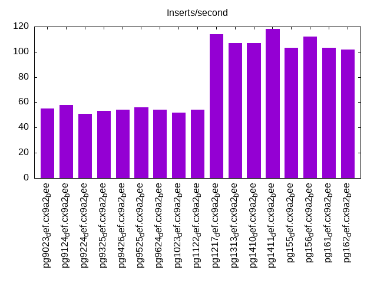

This is a report for the insert benchmark with 800M docs and 1 client(s). It is generated by scripts (bash, awk, sed) and Tufte might not be impressed. An overview of the insert benchmark is here and a short update is here. Below, by DBMS, I mean DBMS+version.config. An example is my8020.c10b40 where my means MySQL, 8020 is version 8.0.20 and c10b40 is the name for the configuration file.
The test server has 8 AMD cores, 16G RAM and an NVMe SSD. It is described here as the Beelink. The benchmark was run with 1 client and there were 1 or 3 connections per client (1 for queries or inserts without rate limits, 1+1 for rate limited inserts+deletes). It uses 1 table. It loads 800M rows per table without secondary indexes, creates 3 secondary indexes per table, then inserts 5m rows per table with a delete per insert to avoid growing the table. It then does 6 read+write tests for 1800s each that do queries as fast as possible with 100,100,500,500,1000,1000 inserts/s and the same for deletes/s per client concurrent with the queries. The database is cached in memory. Clients and the DBMS share one server. The per-database configs are in the per-database subdirectories here.
The tested DBMS are:
The numbers are inserts/s for l.i0, l.i1 and l.i2, indexed docs (or rows) /s for l.x and queries/s for qr100, qp100 thru qr1000, qp1000" The values are the average rate over the entire test for inserts (IPS) and queries (QPS). The range of values for IPS and QPS is split into 3 parts: bottom 25%, middle 50%, top 25%. Values in the bottom 25% have a red background, values in the top 25% have a green background and values in the middle have no color. A gray background is used for values that can be ignored because the DBMS did not sustain the target insert rate. Red backgrounds are not used when the minimum value is within 80% of the max value.
| dbms | l.i0 | l.x | l.i1 | l.i2 | qr100 | qp100 | qr500 | qp500 | qr1000 | qp1000 |
|---|---|---|---|---|---|---|---|---|---|---|
| pg9023_def.cx9a2_bee | 62126 | 85034 | 1131 | 55 | 7315 | 401 | 6601 | 383 | 5134 | 365 |
| pg9124_def.cx9a2_bee | 64072 | 82043 | 1188 | 58 | 7588 | 393 | 7010 | 378 | 5386 | 357 |
| pg9224_def.cx9a2_bee | 62402 | 85671 | 1060 | 51 | 8141 | 396 | 7363 | 367 | 5399 | 358 |
| pg9325_def.cx9a2_bee | 64031 | 83403 | 1104 | 53 | 8073 | 393 | 7389 | 363 | 5584 | 348 |
| pg9426_def.cx9a2_bee | 65035 | 94073 | 1118 | 54 | 8366 | 396 | 7407 | 371 | 5614 | 349 |
| pg9525_def.cx9a2_bee | 65248 | 112724 | 1181 | 56 | 8227 | 400 | 7375 | 379 | 5519 | 358 |
| pg9624_def.cx9a2_bee | 62957 | 126203 | 1159 | 54 | 8203 | 396 | 7595 | 381 | 5626 | 369 |
| pg1023_def.cx9a2_bee | 63286 | 186003 | 1139 | 52 | 7904 | 395 | 7342 | 379 | 5364 | 368 |
| pg1122_def.cx9a2_bee | 74115 | 179775 | 1165 | 54 | 8442 | 396 | 7821 | 380 | 5792 | 370 |
| pg1217_def.cx9a2_bee | 72681 | 183066 | 2225 | 114 | 8641 | 398 | 8102 | 385 | 7232 | 363 |
| pg1313_def.cx9a2_bee | 75047 | 184971 | 2112 | 107 | 8508 | 394 | 8234 | 382 | 7184 | 359 |
| pg1410_def.cx9a2_bee | 73013 | 185100 | 2106 | 107 | 8628 | 394 | 8083 | 381 | 7026 | 357 |
| pg1411_def.cx9a2_bee | 72405 | 181036 | 2259 | 118 | 8595 | 394 | 8183 | 382 | 7187 | 358 |
| pg155_def.cx9a2_bee | 75829 | 190431 | 2041 | 103 | 8532 | 395 | 8024 | 382 | 7069 | 358 |
| pg156_def.cx9a2_bee | 74336 | 195695 | 2187 | 112 | 8530 | 396 | 8110 | 382 | 7245 | 358 |
| pg161_def.cx9a2_bee | 75012 | 198560 | 2081 | 103 | 8519 | 395 | 8087 | 382 | 6981 | 359 |
| pg162_def.cx9a2_bee | 75479 | 194316 | 2089 | 102 | 8378 | 395 | 8102 | 382 | 7005 | 359 |
This table has relative throughput, throughput for the DBMS relative to the DBMS in the first line, using the absolute throughput from the previous table. Values less than 0.95 have a yellow background. Values greater than 1.05 have a blue background.
| dbms | l.i0 | l.x | l.i1 | l.i2 | qr100 | qp100 | qr500 | qp500 | qr1000 | qp1000 |
|---|---|---|---|---|---|---|---|---|---|---|
| pg9023_def.cx9a2_bee | 1.00 | 1.00 | 1.00 | 1.00 | 1.00 | 1.00 | 1.00 | 1.00 | 1.00 | 1.00 |
| pg9124_def.cx9a2_bee | 1.03 | 0.96 | 1.05 | 1.05 | 1.04 | 0.98 | 1.06 | 0.99 | 1.05 | 0.98 |
| pg9224_def.cx9a2_bee | 1.00 | 1.01 | 0.94 | 0.93 | 1.11 | 0.99 | 1.12 | 0.96 | 1.05 | 0.98 |
| pg9325_def.cx9a2_bee | 1.03 | 0.98 | 0.98 | 0.96 | 1.10 | 0.98 | 1.12 | 0.95 | 1.09 | 0.95 |
| pg9426_def.cx9a2_bee | 1.05 | 1.11 | 0.99 | 0.98 | 1.14 | 0.99 | 1.12 | 0.97 | 1.09 | 0.96 |
| pg9525_def.cx9a2_bee | 1.05 | 1.33 | 1.04 | 1.02 | 1.12 | 1.00 | 1.12 | 0.99 | 1.07 | 0.98 |
| pg9624_def.cx9a2_bee | 1.01 | 1.48 | 1.02 | 0.98 | 1.12 | 0.99 | 1.15 | 0.99 | 1.10 | 1.01 |
| pg1023_def.cx9a2_bee | 1.02 | 2.19 | 1.01 | 0.95 | 1.08 | 0.99 | 1.11 | 0.99 | 1.04 | 1.01 |
| pg1122_def.cx9a2_bee | 1.19 | 2.11 | 1.03 | 0.98 | 1.15 | 0.99 | 1.18 | 0.99 | 1.13 | 1.01 |
| pg1217_def.cx9a2_bee | 1.17 | 2.15 | 1.97 | 2.07 | 1.18 | 0.99 | 1.23 | 1.01 | 1.41 | 0.99 |
| pg1313_def.cx9a2_bee | 1.21 | 2.18 | 1.87 | 1.95 | 1.16 | 0.98 | 1.25 | 1.00 | 1.40 | 0.98 |
| pg1410_def.cx9a2_bee | 1.18 | 2.18 | 1.86 | 1.95 | 1.18 | 0.98 | 1.22 | 0.99 | 1.37 | 0.98 |
| pg1411_def.cx9a2_bee | 1.17 | 2.13 | 2.00 | 2.15 | 1.17 | 0.98 | 1.24 | 1.00 | 1.40 | 0.98 |
| pg155_def.cx9a2_bee | 1.22 | 2.24 | 1.80 | 1.87 | 1.17 | 0.99 | 1.22 | 1.00 | 1.38 | 0.98 |
| pg156_def.cx9a2_bee | 1.20 | 2.30 | 1.93 | 2.04 | 1.17 | 0.99 | 1.23 | 1.00 | 1.41 | 0.98 |
| pg161_def.cx9a2_bee | 1.21 | 2.34 | 1.84 | 1.87 | 1.16 | 0.99 | 1.23 | 1.00 | 1.36 | 0.98 |
| pg162_def.cx9a2_bee | 1.21 | 2.29 | 1.85 | 1.85 | 1.15 | 0.99 | 1.23 | 1.00 | 1.36 | 0.98 |
This lists the average rate of inserts/s for the tests that do inserts concurrent with queries. For such tests the query rate is listed in the table above. The read+write tests are setup so that the insert rate should match the target rate every second. Cells that are not at least 95% of the target have a red background to indicate a failure to satisfy the target.
| dbms | qr100.L1 | qp100.L2 | qr500.L3 | qp500.L4 | qr1000.L5 | qp1000.L6 |
|---|---|---|---|---|---|---|
| pg9023_def.cx9a2_bee | 100 | 100 | 499 | 499 | 796 | 503 |
| pg9124_def.cx9a2_bee | 100 | 100 | 499 | 499 | 825 | 526 |
| pg9224_def.cx9a2_bee | 100 | 100 | 499 | 499 | 742 | 467 |
| pg9325_def.cx9a2_bee | 100 | 100 | 499 | 499 | 767 | 483 |
| pg9426_def.cx9a2_bee | 100 | 100 | 499 | 498 | 779 | 491 |
| pg9525_def.cx9a2_bee | 100 | 100 | 499 | 499 | 797 | 506 |
| pg9624_def.cx9a2_bee | 100 | 100 | 499 | 499 | 780 | 495 |
| pg1023_def.cx9a2_bee | 100 | 100 | 499 | 499 | 760 | 481 |
| pg1122_def.cx9a2_bee | 100 | 100 | 499 | 499 | 782 | 496 |
| pg1217_def.cx9a2_bee | 100 | 100 | 499 | 499 | 998 | 975 |
| pg1313_def.cx9a2_bee | 100 | 100 | 499 | 499 | 998 | 948 |
| pg1410_def.cx9a2_bee | 100 | 100 | 499 | 499 | 997 | 946 |
| pg1411_def.cx9a2_bee | 100 | 100 | 499 | 499 | 998 | 987 |
| pg155_def.cx9a2_bee | 100 | 100 | 499 | 499 | 998 | 923 |
| pg156_def.cx9a2_bee | 100 | 100 | 498 | 499 | 997 | 970 |
| pg161_def.cx9a2_bee | 100 | 100 | 498 | 499 | 998 | 926 |
| pg162_def.cx9a2_bee | 100 | 100 | 499 | 499 | 998 | 920 |
| target | 100 | 100 | 500 | 500 | 1000 | 1000 |
l.i0: load without secondary indexes. Graphs for performance per 1-second interval are here.
Average throughput:
Insert response time histogram: each cell has the percentage of responses that take <= the time in the header and max is the max response time in seconds. For the max column values in the top 25% of the range have a red background and in the bottom 25% of the range have a green background. The red background is not used when the min value is within 80% of the max value.
| dbms | 256us | 1ms | 4ms | 16ms | 64ms | 256ms | 1s | 4s | 16s | gt | max |
|---|---|---|---|---|---|---|---|---|---|---|---|
| pg9023_def.cx9a2_bee | 99.079 | 0.721 | 0.200 | 0.051 | |||||||
| pg9124_def.cx9a2_bee | 99.892 | 0.108 | nonzero | 0.058 | |||||||
| pg9224_def.cx9a2_bee | 99.892 | 0.098 | 0.011 | nonzero | 0.083 | ||||||
| pg9325_def.cx9a2_bee | 99.884 | 0.101 | 0.015 | nonzero | 0.076 | ||||||
| pg9426_def.cx9a2_bee | 99.884 | 0.100 | 0.016 | nonzero | 0.072 | ||||||
| pg9525_def.cx9a2_bee | 99.998 | 0.001 | nonzero | 0.060 | |||||||
| pg9624_def.cx9a2_bee | 99.999 | 0.001 | nonzero | 0.056 | |||||||
| pg1023_def.cx9a2_bee | 99.999 | 0.001 | nonzero | 0.056 | |||||||
| pg1122_def.cx9a2_bee | 99.999 | 0.001 | nonzero | 0.063 | |||||||
| pg1217_def.cx9a2_bee | 99.999 | 0.001 | nonzero | 0.059 | |||||||
| pg1313_def.cx9a2_bee | 99.999 | 0.001 | nonzero | 0.059 | |||||||
| pg1410_def.cx9a2_bee | 99.997 | 0.002 | 0.001 | nonzero | 0.078 | ||||||
| pg1411_def.cx9a2_bee | 99.997 | 0.003 | 0.001 | 0.062 | |||||||
| pg155_def.cx9a2_bee | 99.997 | 0.003 | 0.001 | 0.059 | |||||||
| pg156_def.cx9a2_bee | 99.997 | 0.003 | nonzero | nonzero | 0.066 | ||||||
| pg161_def.cx9a2_bee | 99.997 | 0.002 | nonzero | 0.060 | |||||||
| pg162_def.cx9a2_bee | 99.998 | 0.001 | 0.001 | 0.062 |
Performance metrics for the DBMS listed above. Some are normalized by throughput, others are not. Legend for results is here.
ips qps rps rmbps wps wmbps rpq rkbpq wpi wkbpi csps cpups cspq cpupq dbgb1 dbgb2 rss maxop p50 p99 tag 62126 0 28 0.2 127.2 20.9 0.000 0.004 0.002 0.345 6631 20.5 0.107 26 76.5 76.7 0.3 0.051 62729 57379 pg9023_def.cx9a2_bee 64072 0 29 0.2 129.7 21.6 0.000 0.004 0.002 0.345 6823 21.5 0.106 27 76.5 76.7 10.2 0.058 65516 58834 pg9124_def.cx9a2_bee 62402 0 28 0.2 686.0 21.1 0.000 0.004 0.011 0.346 8367 22.1 0.134 28 76.5 76.7 0.1 0.083 63726 56983 pg9224_def.cx9a2_bee 64031 0 28 0.2 627.6 22.1 0.000 0.004 0.010 0.354 8383 21.7 0.131 27 76.5 76.7 0.1 0.076 65390 57929 pg9325_def.cx9a2_bee 65035 0 29 0.2 631.3 22.5 0.000 0.004 0.010 0.354 8457 22.4 0.130 28 76.5 76.8 0.1 0.072 65251 62131 pg9426_def.cx9a2_bee 65248 0 30 0.2 624.0 27.1 0.000 0.004 0.010 0.425 8448 22.5 0.129 28 76.5 116.6 9.5 0.060 65346 63656 pg9525_def.cx9a2_bee 62957 0 28 0.2 120.1 26.1 0.000 0.004 0.002 0.425 7942 23.1 0.126 29 76.5 116.6 9.7 0.056 63129 61315 pg9624_def.cx9a2_bee 63286 0 29 0.2 120.7 26.3 0.000 0.004 0.002 0.425 7838 23.0 0.124 29 76.5 116.6 9.7 0.056 63429 61730 pg1023_def.cx9a2_bee 74115 0 32 0.3 136.7 29.9 0.000 0.003 0.002 0.412 9074 23.4 0.122 25 76.5 110.0 9.1 0.063 74317 72217 pg1122_def.cx9a2_bee 72681 0 33 0.3 137.3 29.4 0.000 0.004 0.002 0.414 8930 23.4 0.123 26 76.5 109.6 9.1 0.059 72853 70819 pg1217_def.cx9a2_bee 75047 0 30 0.2 103.8 30.1 0.000 0.003 0.001 0.411 9181 23.2 0.122 25 76.5 111.7 1.1 0.059 75215 73209 pg1313_def.cx9a2_bee 73013 0 32 0.3 103.6 30.0 0.000 0.004 0.001 0.421 8933 23.0 0.122 25 76.5 116.6 4.2 0.078 73219 71112 pg1410_def.cx9a2_bee 72405 0 32 0.3 107.0 29.9 0.000 0.004 0.001 0.424 8864 22.9 0.122 25 76.5 116.6 0.0 0.062 72625 70508 pg1411_def.cx9a2_bee 75829 0 32 0.3 109.1 31.2 0.000 0.003 0.001 0.422 9200 23.0 0.121 24 76.5 116.6 5.6 0.059 76017 73815 pg155_def.cx9a2_bee 74336 0 31 0.2 108.2 30.8 0.000 0.003 0.001 0.424 9042 22.9 0.122 25 76.5 116.6 0.4 0.066 74519 72220 pg156_def.cx9a2_bee 75012 0 31 0.2 109.5 31.1 0.000 0.003 0.001 0.424 9112 23.2 0.121 25 76.5 116.6 3.4 0.060 75215 73197 pg161_def.cx9a2_bee 75479 0 31 0.2 107.7 31.1 0.000 0.003 0.001 0.422 9161 23.1 0.121 24 76.5 116.6 0.5 0.062 75714 73605 pg162_def.cx9a2_bee
l.x: create secondary indexes.
Average throughput:
Performance metrics for the DBMS listed above. Some are normalized by throughput, others are not. Legend for results is here.
ips qps rps rmbps wps wmbps rpq rkbpq wpi wkbpi csps cpups cspq cpupq dbgb1 dbgb2 rss maxop p50 p99 tag 85034 0 358 42.8 179.8 48.5 0.004 0.516 0.002 0.584 384 12.3 0.005 12 153.8 154.0 8.9 0.012 NA NA pg9023_def.cx9a2_bee 82043 0 344 41.3 172.2 46.8 0.004 0.516 0.002 0.584 393 12.4 0.005 12 153.8 154.0 7.6 0.013 NA NA pg9124_def.cx9a2_bee 85671 0 362 43.1 180.4 48.9 0.004 0.516 0.002 0.584 354 12.5 0.004 12 153.8 154.0 6.4 0.004 NA NA pg9224_def.cx9a2_bee 83403 0 370 42.1 189.8 53.3 0.004 0.517 0.002 0.655 364 12.5 0.004 12 153.8 154.0 7.7 0.004 NA NA pg9325_def.cx9a2_bee 94073 0 260 31.9 167.3 43.3 0.003 0.347 0.002 0.472 288 12.5 0.003 11 153.8 154.0 10.3 0.004 NA NA pg9426_def.cx9a2_bee 112724 0 312 38.2 199.4 52.5 0.003 0.347 0.002 0.477 274 12.7 0.002 9 153.8 193.8 10.3 0.004 NA NA pg9525_def.cx9a2_bee 126203 0 393 48.1 277.4 64.1 0.003 0.390 0.002 0.520 305 12.8 0.002 8 153.8 193.8 10.3 0.003 NA NA pg9624_def.cx9a2_bee 186003 0 561 69.2 402.1 92.8 0.003 0.381 0.002 0.511 461 12.8 0.002 6 153.8 193.8 10.3 0.005 NA NA pg1023_def.cx9a2_bee 179775 0 541 66.9 396.7 91.8 0.003 0.381 0.002 0.523 449 12.7 0.002 6 153.8 193.8 10.3 0.005 NA NA pg1122_def.cx9a2_bee 183066 0 552 68.2 408.4 93.3 0.003 0.381 0.002 0.522 467 12.7 0.003 6 153.8 193.8 10.3 0.004 NA NA pg1217_def.cx9a2_bee 184971 0 549 68.1 189.3 68.6 0.003 0.377 0.001 0.380 387 12.5 0.002 5 153.6 189.6 10.2 0.007 NA NA pg1313_def.cx9a2_bee 185100 0 549 68.1 186.4 67.6 0.003 0.377 0.001 0.374 385 12.5 0.002 5 153.6 193.7 10.2 0.004 NA NA pg1410_def.cx9a2_bee 181036 0 538 66.7 180.4 65.9 0.003 0.377 0.001 0.373 376 12.4 0.002 5 153.6 193.7 10.2 0.006 NA NA pg1411_def.cx9a2_bee 190431 0 577 71.7 195.5 70.9 0.003 0.385 0.001 0.381 382 12.5 0.002 5 153.6 193.7 10.2 0.005 NA NA pg155_def.cx9a2_bee 195695 0 593 73.6 195.5 72.8 0.003 0.385 0.001 0.381 422 12.4 0.002 5 153.6 193.7 2.7 0.004 NA NA pg156_def.cx9a2_bee 198560 0 601 74.7 199.1 73.9 0.003 0.385 0.001 0.381 428 12.4 0.002 5 153.6 193.7 10.3 0.020 NA NA pg161_def.cx9a2_bee 194316 0 588 73.1 193.8 72.4 0.003 0.385 0.001 0.382 419 12.4 0.002 5 153.6 193.7 10.3 0.005 NA NA pg162_def.cx9a2_bee
l.i1: continue load after secondary indexes created with 50 inserts per transaction. Graphs for performance per 1-second interval are here.
Average throughput:
Insert response time histogram: each cell has the percentage of responses that take <= the time in the header and max is the max response time in seconds. For the max column values in the top 25% of the range have a red background and in the bottom 25% of the range have a green background. The red background is not used when the min value is within 80% of the max value.
| dbms | 256us | 1ms | 4ms | 16ms | 64ms | 256ms | 1s | 4s | 16s | gt | max |
|---|---|---|---|---|---|---|---|---|---|---|---|
| pg9023_def.cx9a2_bee | 2.570 | 97.282 | 0.147 | 0.228 | |||||||
| pg9124_def.cx9a2_bee | 7.337 | 92.578 | 0.085 | 0.199 | |||||||
| pg9224_def.cx9a2_bee | 4.617 | 95.270 | 0.112 | 0.231 | |||||||
| pg9325_def.cx9a2_bee | 3.208 | 96.761 | 0.031 | 0.098 | |||||||
| pg9426_def.cx9a2_bee | 4.001 | 95.975 | 0.024 | 0.078 | |||||||
| pg9525_def.cx9a2_bee | 84.154 | 15.764 | 0.083 | 0.103 | |||||||
| pg9624_def.cx9a2_bee | 95.877 | 4.120 | 0.003 | 0.124 | |||||||
| pg1023_def.cx9a2_bee | 94.935 | 5.065 | 0.056 | ||||||||
| pg1122_def.cx9a2_bee | 93.589 | 6.410 | 0.001 | 0.130 | |||||||
| pg1217_def.cx9a2_bee | 90.534 | 9.464 | 0.003 | 0.123 | |||||||
| pg1313_def.cx9a2_bee | 89.494 | 10.505 | 0.001 | 0.066 | |||||||
| pg1410_def.cx9a2_bee | 88.407 | 11.592 | 0.063 | ||||||||
| pg1411_def.cx9a2_bee | 85.867 | 14.129 | 0.004 | 0.085 | |||||||
| pg155_def.cx9a2_bee | 90.040 | 9.960 | 0.055 | ||||||||
| pg156_def.cx9a2_bee | 88.097 | 11.901 | 0.001 | 0.068 | |||||||
| pg161_def.cx9a2_bee | 97.239 | 2.761 | 0.056 | ||||||||
| pg162_def.cx9a2_bee | 98.526 | 1.474 | 0.052 |
Delete response time histogram: each cell has the percentage of responses that take <= the time in the header and max is the max response time in seconds. For the max column values in the top 25% of the range have a red background and in the bottom 25% of the range have a green background. The red background is not used when the min value is within 80% of the max value.
| dbms | 256us | 1ms | 4ms | 16ms | 64ms | 256ms | 1s | 4s | 16s | gt | max |
|---|---|---|---|---|---|---|---|---|---|---|---|
| pg9023_def.cx9a2_bee | 0.334 | 2.948 | 12.296 | 63.504 | 20.919 | 0.093 | |||||
| pg9124_def.cx9a2_bee | 0.363 | 3.069 | 13.720 | 65.692 | 17.156 | 0.082 | |||||
| pg9224_def.cx9a2_bee | 0.314 | 2.708 | 11.934 | 58.421 | 26.624 | 0.092 | |||||
| pg9325_def.cx9a2_bee | 0.398 | 2.789 | 12.415 | 60.708 | 23.691 | 0.089 | |||||
| pg9426_def.cx9a2_bee | 0.481 | 2.855 | 13.969 | 59.656 | 23.039 | 0.090 | |||||
| pg9525_def.cx9a2_bee | 0.513 | 2.562 | 16.344 | 60.093 | 20.489 | 0.085 | |||||
| pg9624_def.cx9a2_bee | 0.361 | 2.826 | 15.565 | 58.294 | 22.954 | 0.123 | |||||
| pg1023_def.cx9a2_bee | 0.248 | 2.711 | 15.431 | 57.009 | 24.601 | 0.089 | |||||
| pg1122_def.cx9a2_bee | 0.319 | 2.556 | 16.062 | 58.571 | 22.491 | 0.131 | |||||
| pg1217_def.cx9a2_bee | 0.003 | 0.647 | 5.904 | 34.413 | 59.032 | 0.001 | 0.114 | ||||
| pg1313_def.cx9a2_bee | 0.001 | 0.376 | 5.599 | 32.727 | 61.296 | 0.044 | |||||
| pg1410_def.cx9a2_bee | 0.401 | 5.567 | 32.297 | 61.734 | 0.044 | ||||||
| pg1411_def.cx9a2_bee | 0.414 | 6.283 | 35.991 | 57.312 | 0.039 | ||||||
| pg155_def.cx9a2_bee | 0.369 | 5.676 | 30.030 | 63.925 | 0.046 | ||||||
| pg156_def.cx9a2_bee | 0.402 | 6.177 | 33.376 | 60.044 | 0.042 | ||||||
| pg161_def.cx9a2_bee | 0.381 | 5.899 | 30.125 | 63.595 | 0.046 | ||||||
| pg162_def.cx9a2_bee | 0.338 | 5.699 | 29.859 | 64.105 | 0.046 |
Performance metrics for the DBMS listed above. Some are normalized by throughput, others are not. Legend for results is here.
ips qps rps rmbps wps wmbps rpq rkbpq wpi wkbpi csps cpups cspq cpupq dbgb1 dbgb2 rss maxop p50 p99 tag 1131 0 1880 15.0 2392.7 37.7 1.662 13.563 2.116 34.166 4909 14.6 4.340 1033 154.5 154.6 9.9 0.228 899 599 pg9023_def.cx9a2_bee 1188 0 1974 15.7 2514.3 39.6 1.663 13.570 2.117 34.162 5106 14.8 4.300 997 154.5 154.7 10.0 0.199 949 649 pg9124_def.cx9a2_bee 1060 0 1762 14.0 2286.8 35.4 1.662 13.564 2.157 34.147 4864 14.7 4.589 1109 154.5 154.7 10.0 0.231 849 549 pg9224_def.cx9a2_bee 1104 0 1818 14.5 2387.1 36.9 1.647 13.432 2.163 34.255 4894 14.8 4.435 1073 154.5 154.7 10.2 0.098 850 599 pg9325_def.cx9a2_bee 1118 0 1839 14.6 2413.5 37.3 1.644 13.401 2.158 34.190 4880 14.8 4.364 1059 154.5 154.7 10.2 0.078 899 599 pg9426_def.cx9a2_bee 1181 0 1942 15.4 1998.1 30.0 1.645 13.327 1.692 25.980 4880 14.0 4.134 949 154.5 194.5 10.0 0.103 899 599 pg9525_def.cx9a2_bee 1159 0 1906 15.1 1944.4 29.6 1.644 13.324 1.677 26.178 4813 14.4 4.152 994 154.5 194.5 9.9 0.124 849 599 pg9624_def.cx9a2_bee 1139 0 1874 14.8 1882.3 29.1 1.645 13.334 1.652 26.165 4704 14.3 4.130 1004 154.5 194.5 9.1 0.056 849 599 pg1023_def.cx9a2_bee 1165 0 1924 15.2 1932.8 28.2 1.652 13.393 1.659 24.758 4812 14.3 4.131 982 154.5 194.5 9.7 0.130 850 599 pg1122_def.cx9a2_bee 2225 0 3655 28.9 3660.6 52.9 1.643 13.324 1.646 24.349 8913 15.6 4.006 561 154.4 194.5 9.6 0.123 1947 1298 pg1217_def.cx9a2_bee 2112 0 3517 27.8 3579.6 52.6 1.665 13.502 1.695 25.528 8499 15.5 4.024 587 154.3 194.3 9.8 0.066 1798 1199 pg1313_def.cx9a2_bee 2106 0 3504 27.7 3556.1 51.1 1.663 13.488 1.688 24.823 8346 15.1 3.962 574 154.3 194.3 8.8 0.063 1799 1198 pg1410_def.cx9a2_bee 2259 0 3758 29.8 3818.5 56.0 1.664 13.490 1.691 25.378 8966 15.3 3.970 542 154.3 194.3 9.4 0.085 1998 1348 pg1411_def.cx9a2_bee 2041 0 3399 26.9 3449.6 49.9 1.665 13.500 1.690 25.024 7961 15.1 3.901 592 154.3 194.3 10.0 0.055 1698 1149 pg155_def.cx9a2_bee 2187 0 3645 28.8 3694.0 53.8 1.667 13.509 1.689 25.206 8508 15.0 3.890 549 154.3 194.3 9.7 0.068 1898 1248 pg156_def.cx9a2_bee 2081 0 3464 27.4 3515.0 51.2 1.664 13.490 1.689 25.183 8098 15.2 3.891 584 154.3 194.3 9.6 0.056 1698 1148 pg161_def.cx9a2_bee 2089 0 3478 27.5 3534.8 51.8 1.665 13.497 1.692 25.410 8119 15.4 3.887 590 154.3 194.3 9.9 0.052 1697 1148 pg162_def.cx9a2_bee
l.i2: continue load after secondary indexes created with 5 inserts per transaction. Graphs for performance per 1-second interval are here.
Average throughput:
Insert response time histogram: each cell has the percentage of responses that take <= the time in the header and max is the max response time in seconds. For the max column values in the top 25% of the range have a red background and in the bottom 25% of the range have a green background. The red background is not used when the min value is within 80% of the max value.
| dbms | 256us | 1ms | 4ms | 16ms | 64ms | 256ms | 1s | 4s | 16s | gt | max |
|---|---|---|---|---|---|---|---|---|---|---|---|
| pg9023_def.cx9a2_bee | 83.459 | 16.496 | 0.045 | 0.050 | |||||||
| pg9124_def.cx9a2_bee | 84.408 | 15.590 | 0.002 | 0.036 | |||||||
| pg9224_def.cx9a2_bee | 85.043 | 14.957 | 0.001 | 0.019 | |||||||
| pg9325_def.cx9a2_bee | 89.076 | 10.924 | 0.001 | 0.016 | |||||||
| pg9426_def.cx9a2_bee | 92.674 | 7.324 | 0.002 | 0.033 | |||||||
| pg9525_def.cx9a2_bee | 0.003 | 98.201 | 1.795 | 0.001 | 0.017 | ||||||
| pg9624_def.cx9a2_bee | 0.002 | 94.686 | 5.300 | 0.013 | 0.029 | ||||||
| pg1023_def.cx9a2_bee | 0.001 | 94.030 | 5.957 | 0.013 | 0.039 | ||||||
| pg1122_def.cx9a2_bee | 0.001 | 96.344 | 3.644 | 0.013 | 0.027 | ||||||
| pg1217_def.cx9a2_bee | 0.006 | 97.553 | 2.433 | 0.007 | 0.027 | ||||||
| pg1313_def.cx9a2_bee | 0.005 | 97.938 | 2.046 | 0.010 | 0.039 | ||||||
| pg1410_def.cx9a2_bee | 0.006 | 99.440 | 0.539 | 0.015 | 0.030 | ||||||
| pg1411_def.cx9a2_bee | 0.006 | 98.604 | 1.378 | 0.013 | 0.040 | ||||||
| pg155_def.cx9a2_bee | 0.005 | 98.771 | 1.207 | 0.017 | 0.022 | ||||||
| pg156_def.cx9a2_bee | 0.005 | 98.411 | 1.571 | 0.013 | 0.023 | ||||||
| pg161_def.cx9a2_bee | 0.006 | 98.599 | 1.380 | 0.016 | 0.022 | ||||||
| pg162_def.cx9a2_bee | 0.009 | 98.525 | 1.454 | 0.013 | 0.033 |
Delete response time histogram: each cell has the percentage of responses that take <= the time in the header and max is the max response time in seconds. For the max column values in the top 25% of the range have a red background and in the bottom 25% of the range have a green background. The red background is not used when the min value is within 80% of the max value.
| dbms | 256us | 1ms | 4ms | 16ms | 64ms | 256ms | 1s | 4s | 16s | gt | max |
|---|---|---|---|---|---|---|---|---|---|---|---|
| pg9023_def.cx9a2_bee | 100.000 | 0.183 | |||||||||
| pg9124_def.cx9a2_bee | 100.000 | 0.176 | |||||||||
| pg9224_def.cx9a2_bee | 100.000 | 0.187 | |||||||||
| pg9325_def.cx9a2_bee | 100.000 | 0.168 | |||||||||
| pg9426_def.cx9a2_bee | 100.000 | 0.164 | |||||||||
| pg9525_def.cx9a2_bee | 100.000 | 0.135 | |||||||||
| pg9624_def.cx9a2_bee | 100.000 | 0.154 | |||||||||
| pg1023_def.cx9a2_bee | 100.000 | 0.153 | |||||||||
| pg1122_def.cx9a2_bee | 100.000 | 0.153 | |||||||||
| pg1217_def.cx9a2_bee | 99.999 | 0.001 | 0.092 | ||||||||
| pg1313_def.cx9a2_bee | 99.999 | 0.001 | 0.102 | ||||||||
| pg1410_def.cx9a2_bee | 99.999 | 0.001 | 0.111 | ||||||||
| pg1411_def.cx9a2_bee | 99.999 | 0.001 | 0.106 | ||||||||
| pg155_def.cx9a2_bee | 99.999 | 0.001 | 0.110 | ||||||||
| pg156_def.cx9a2_bee | 99.999 | 0.001 | 0.107 | ||||||||
| pg161_def.cx9a2_bee | 99.999 | 0.001 | 0.091 | ||||||||
| pg162_def.cx9a2_bee | 99.999 | 0.001 | 0.106 |
Performance metrics for the DBMS listed above. Some are normalized by throughput, others are not. Legend for results is here.
ips qps rps rmbps wps wmbps rpq rkbpq wpi wkbpi csps cpups cspq cpupq dbgb1 dbgb2 rss maxop p50 p99 tag 55 0 89 0.7 124.0 1.9 1.609 13.122 2.247 34.370 643 12.4 11.643 17971 154.6 154.8 0.4 0.050 55 50 pg9023_def.cx9a2_bee 58 0 93 0.7 129.0 1.9 1.610 13.126 2.236 34.341 670 12.4 11.608 17192 154.6 154.8 0.3 0.036 60 50 pg9124_def.cx9a2_bee 51 0 82 0.7 128.2 1.7 1.609 13.121 2.509 34.372 665 12.4 13.020 19413 154.6 154.8 10.0 0.019 50 45 pg9224_def.cx9a2_bee 53 0 86 0.7 134.0 1.8 1.609 13.121 2.519 34.454 696 12.4 13.087 18647 154.6 154.8 0.9 0.016 55 45 pg9325_def.cx9a2_bee 54 0 87 0.7 135.7 1.8 1.612 13.140 2.522 34.505 702 12.4 13.047 18439 154.6 154.8 0.9 0.033 55 45 pg9426_def.cx9a2_bee 56 0 89 0.7 162.9 1.9 1.608 13.011 2.935 35.576 691 12.4 12.459 17874 154.6 182.2 10.2 0.017 55 50 pg9525_def.cx9a2_bee 54 0 86 0.7 133.5 1.8 1.609 13.022 2.491 35.020 791 12.5 14.755 18657 154.6 180.8 10.1 0.029 55 45 pg9624_def.cx9a2_bee 52 0 84 0.7 132.7 1.8 1.611 13.039 2.538 35.398 740 12.5 14.153 19120 154.6 182.0 10.1 0.039 50 45 pg1023_def.cx9a2_bee 54 0 87 0.7 136.3 1.9 1.610 13.045 2.524 35.576 745 12.5 13.790 18519 154.6 182.0 10.1 0.027 55 45 pg1122_def.cx9a2_bee 114 0 183 1.5 259.0 3.7 1.608 13.041 2.272 33.357 1300 12.9 11.404 9053 154.6 187.0 10.1 0.027 115 100 pg1217_def.cx9a2_bee 107 0 176 1.4 236.7 3.5 1.637 13.274 2.208 33.020 1217 12.8 11.353 9552 154.5 185.2 10.2 0.039 105 95 pg1313_def.cx9a2_bee 107 0 171 1.4 227.1 3.4 1.606 13.031 2.128 32.790 1078 12.5 10.101 9372 154.5 186.4 10.1 0.030 105 95 pg1410_def.cx9a2_bee 118 0 190 1.5 247.4 3.7 1.607 13.035 2.091 31.837 1237 12.6 10.458 8521 154.5 189.4 10.1 0.040 120 105 pg1411_def.cx9a2_bee 103 0 165 1.3 219.8 3.3 1.607 13.036 2.140 32.467 986 12.4 9.597 9659 154.5 186.8 10.1 0.022 100 90 pg155_def.cx9a2_bee 112 0 180 1.4 237.6 3.5 1.608 13.045 2.118 32.163 1065 12.4 9.496 8841 154.5 188.8 10.1 0.023 110 100 pg156_def.cx9a2_bee 103 0 166 1.3 220.5 3.3 1.606 13.028 2.132 32.369 995 12.4 9.626 9594 154.5 186.7 10.1 0.022 105 90 pg161_def.cx9a2_bee 102 0 164 1.3 218.6 3.2 1.607 13.040 2.149 32.384 982 12.4 9.660 9754 154.5 187.1 10.1 0.033 100 90 pg162_def.cx9a2_bee
qr100.L1: range queries with 100 insert/s per client. Graphs for performance per 1-second interval are here.
Average throughput:
Query response time histogram: each cell has the percentage of responses that take <= the time in the header and max is the max response time in seconds. For max values in the top 25% of the range have a red background and in the bottom 25% of the range have a green background. The red background is not used when the min value is within 80% of the max value.
| dbms | 256us | 1ms | 4ms | 16ms | 64ms | 256ms | 1s | 4s | 16s | gt | max |
|---|---|---|---|---|---|---|---|---|---|---|---|
| pg9023_def.cx9a2_bee | 99.803 | 0.113 | 0.083 | 0.002 | 0.011 | ||||||
| pg9124_def.cx9a2_bee | 99.797 | 0.121 | 0.080 | 0.002 | 0.011 | ||||||
| pg9224_def.cx9a2_bee | 99.881 | 0.117 | 0.001 | 0.001 | 0.010 | ||||||
| pg9325_def.cx9a2_bee | 99.873 | 0.126 | 0.001 | nonzero | 0.010 | ||||||
| pg9426_def.cx9a2_bee | 99.890 | 0.109 | nonzero | nonzero | 0.010 | ||||||
| pg9525_def.cx9a2_bee | 99.892 | 0.107 | nonzero | 0.001 | 0.010 | ||||||
| pg9624_def.cx9a2_bee | 99.875 | 0.123 | 0.001 | 0.001 | 0.010 | ||||||
| pg1023_def.cx9a2_bee | 99.871 | 0.128 | nonzero | nonzero | 0.010 | ||||||
| pg1122_def.cx9a2_bee | 99.897 | 0.102 | nonzero | 0.001 | 0.010 | ||||||
| pg1217_def.cx9a2_bee | 99.887 | 0.112 | 0.001 | 0.001 | 0.010 | ||||||
| pg1313_def.cx9a2_bee | 99.883 | 0.116 | nonzero | 0.001 | 0.010 | ||||||
| pg1410_def.cx9a2_bee | 99.918 | 0.081 | nonzero | 0.001 | 0.010 | ||||||
| pg1411_def.cx9a2_bee | 99.927 | 0.072 | nonzero | 0.001 | 0.010 | ||||||
| pg155_def.cx9a2_bee | 99.920 | 0.079 | nonzero | 0.001 | 0.010 | ||||||
| pg156_def.cx9a2_bee | 99.910 | 0.089 | nonzero | 0.001 | 0.010 | ||||||
| pg161_def.cx9a2_bee | 99.912 | 0.087 | 0.001 | 0.001 | 0.010 | ||||||
| pg162_def.cx9a2_bee | 99.919 | 0.079 | nonzero | 0.001 | nonzero | 0.019 |
Insert response time histogram: each cell has the percentage of responses that take <= the time in the header and max is the max response time in seconds. For max values in the top 25% of the range have a red background and in the bottom 25% of the range have a green background. The red background is not used when the min value is within 80% of the max value.
| dbms | 256us | 1ms | 4ms | 16ms | 64ms | 256ms | 1s | 4s | 16s | gt | max |
|---|---|---|---|---|---|---|---|---|---|---|---|
| pg9023_def.cx9a2_bee | 2.528 | 97.472 | 0.040 | ||||||||
| pg9124_def.cx9a2_bee | 8.389 | 91.611 | 0.035 | ||||||||
| pg9224_def.cx9a2_bee | 0.417 | 99.583 | 0.037 | ||||||||
| pg9325_def.cx9a2_bee | 0.028 | 99.944 | 0.028 | 0.071 | |||||||
| pg9426_def.cx9a2_bee | 1.056 | 98.944 | 0.037 | ||||||||
| pg9525_def.cx9a2_bee | 47.500 | 52.500 | 0.032 | ||||||||
| pg9624_def.cx9a2_bee | 49.583 | 50.417 | 0.046 | ||||||||
| pg1023_def.cx9a2_bee | 51.500 | 48.500 | 0.031 | ||||||||
| pg1122_def.cx9a2_bee | 50.444 | 49.556 | 0.030 | ||||||||
| pg1217_def.cx9a2_bee | 50.778 | 49.222 | 0.031 | ||||||||
| pg1313_def.cx9a2_bee | 51.083 | 48.917 | 0.034 | ||||||||
| pg1410_def.cx9a2_bee | 52.111 | 47.889 | 0.031 | ||||||||
| pg1411_def.cx9a2_bee | 50.861 | 49.139 | 0.031 | ||||||||
| pg155_def.cx9a2_bee | 49.694 | 50.306 | 0.033 | ||||||||
| pg156_def.cx9a2_bee | 50.889 | 49.111 | 0.031 | ||||||||
| pg161_def.cx9a2_bee | 51.222 | 48.778 | 0.031 | ||||||||
| pg162_def.cx9a2_bee | 51.361 | 48.639 | 0.031 |
Delete response time histogram: each cell has the percentage of responses that take <= the time in the header and max is the max response time in seconds. For max values in the top 25% of the range have a red background and in the bottom 25% of the range have a green background. The red background is not used when the min value is within 80% of the max value.
| dbms | 256us | 1ms | 4ms | 16ms | 64ms | 256ms | 1s | 4s | 16s | gt | max |
|---|---|---|---|---|---|---|---|---|---|---|---|
| pg9023_def.cx9a2_bee | 10.944 | 65.556 | 23.500 | 0.010 | |||||||
| pg9124_def.cx9a2_bee | 11.361 | 68.444 | 20.194 | 0.009 | |||||||
| pg9224_def.cx9a2_bee | 9.389 | 60.611 | 30.000 | 0.009 | |||||||
| pg9325_def.cx9a2_bee | 10.472 | 60.778 | 28.750 | 0.009 | |||||||
| pg9426_def.cx9a2_bee | 9.889 | 62.667 | 27.444 | 0.011 | |||||||
| pg9525_def.cx9a2_bee | 10.111 | 63.417 | 26.472 | 0.010 | |||||||
| pg9624_def.cx9a2_bee | 10.556 | 63.333 | 26.111 | 0.009 | |||||||
| pg1023_def.cx9a2_bee | 9.306 | 62.028 | 28.667 | 0.010 | |||||||
| pg1122_def.cx9a2_bee | 10.028 | 63.528 | 26.444 | 0.011 | |||||||
| pg1217_def.cx9a2_bee | 27.056 | 72.750 | 0.194 | 0.009 | |||||||
| pg1313_def.cx9a2_bee | 0.083 | 24.278 | 75.556 | 0.083 | 0.009 | ||||||
| pg1410_def.cx9a2_bee | 23.806 | 76.083 | 0.111 | 0.010 | |||||||
| pg1411_def.cx9a2_bee | 26.778 | 73.194 | 0.028 | 0.008 | |||||||
| pg155_def.cx9a2_bee | 23.500 | 76.361 | 0.139 | 0.009 | |||||||
| pg156_def.cx9a2_bee | 27.167 | 72.750 | 0.083 | 0.009 | |||||||
| pg161_def.cx9a2_bee | 23.694 | 76.250 | 0.056 | 0.009 | |||||||
| pg162_def.cx9a2_bee | 24.917 | 75.000 | 0.083 | 0.010 |
Performance metrics for the DBMS listed above. Some are normalized by throughput, others are not. Legend for results is here.
ips qps rps rmbps wps wmbps rpq rkbpq wpi wkbpi csps cpups cspq cpupq dbgb1 dbgb2 rss maxop p50 p99 tag 100 7315 226 1.8 223.0 3.4 0.031 0.251 2.234 34.750 28605 12.7 3.910 139 154.7 154.8 0.2 0.011 7110 4621 pg9023_def.cx9a2_bee 100 7588 226 1.8 222.0 3.4 0.030 0.242 2.227 34.810 29666 12.5 3.909 132 154.7 154.8 0.2 0.011 7448 4347 pg9124_def.cx9a2_bee 100 8141 167 1.3 227.1 3.4 0.020 0.169 2.278 34.749 31660 12.6 3.889 124 154.7 154.8 9.8 0.010 7768 7465 pg9224_def.cx9a2_bee 100 8073 167 1.3 247.6 3.5 0.021 0.170 2.483 35.796 31470 12.5 3.898 124 154.7 154.8 0.7 0.010 7833 7589 pg9325_def.cx9a2_bee 100 8366 167 1.3 245.9 3.5 0.020 0.162 2.468 35.717 32623 12.9 3.900 123 154.7 154.8 0.7 0.010 7863 7575 pg9426_def.cx9a2_bee 100 8227 167 1.4 19.7 1.5 0.020 0.169 0.198 15.381 31958 12.8 3.885 124 154.7 194.7 10.2 0.010 7753 7432 pg9525_def.cx9a2_bee 100 8203 167 1.4 15.3 1.5 0.020 0.169 0.153 15.516 31867 13.4 3.885 131 154.7 194.7 10.2 0.010 7815 7542 pg9624_def.cx9a2_bee 100 7904 167 1.4 15.2 1.5 0.021 0.175 0.153 15.544 30752 12.6 3.891 128 154.7 194.7 10.2 0.010 7662 7462 pg1023_def.cx9a2_bee 100 8442 167 1.4 15.6 1.5 0.020 0.164 0.157 15.599 32823 12.7 3.888 120 154.7 194.7 10.2 0.010 8134 7910 pg1122_def.cx9a2_bee 100 8641 167 1.4 16.1 1.5 0.019 0.160 0.161 15.594 33582 13.4 3.886 124 154.6 194.7 10.2 0.010 8166 7895 pg1217_def.cx9a2_bee 100 8508 167 1.4 16.0 1.5 0.020 0.163 0.160 15.600 33062 13.1 3.886 123 154.5 186.7 10.2 0.010 8165 7945 pg1313_def.cx9a2_bee 100 8628 167 1.4 14.9 1.5 0.019 0.161 0.149 15.413 33442 13.0 3.876 121 154.5 192.0 10.2 0.010 8213 7991 pg1410_def.cx9a2_bee 100 8595 167 1.4 15.0 1.5 0.019 0.162 0.150 15.352 33311 12.5 3.876 116 154.5 185.7 10.2 0.010 8253 8066 pg1411_def.cx9a2_bee 100 8532 167 1.4 15.1 1.5 0.020 0.163 0.152 15.438 33082 12.7 3.878 119 154.5 191.9 10.1 0.010 8117 7879 pg155_def.cx9a2_bee 100 8530 166 1.4 15.1 1.5 0.020 0.163 0.151 15.552 33097 12.6 3.880 118 154.5 190.2 10.1 0.010 8135 7909 pg156_def.cx9a2_bee 100 8519 166 1.4 16.0 1.5 0.020 0.163 0.160 15.603 33036 12.7 3.878 119 154.5 189.6 10.1 0.010 8167 7959 pg161_def.cx9a2_bee 100 8378 167 1.4 15.0 1.5 0.020 0.166 0.150 15.457 32558 12.5 3.886 119 154.5 191.9 10.1 0.019 8108 7894 pg162_def.cx9a2_bee
qp100.L2: point queries with 100 insert/s per client. Graphs for performance per 1-second interval are here.
Average throughput:
Query response time histogram: each cell has the percentage of responses that take <= the time in the header and max is the max response time in seconds. For max values in the top 25% of the range have a red background and in the bottom 25% of the range have a green background. The red background is not used when the min value is within 80% of the max value.
| dbms | 256us | 1ms | 4ms | 16ms | 64ms | 256ms | 1s | 4s | 16s | gt | max |
|---|---|---|---|---|---|---|---|---|---|---|---|
| pg9023_def.cx9a2_bee | 99.502 | 0.498 | 0.015 | ||||||||
| pg9124_def.cx9a2_bee | 99.387 | 0.613 | 0.014 | ||||||||
| pg9224_def.cx9a2_bee | nonzero | 99.134 | 0.866 | nonzero | 0.042 | ||||||
| pg9325_def.cx9a2_bee | nonzero | 98.493 | 1.506 | 0.001 | 0.039 | ||||||
| pg9426_def.cx9a2_bee | nonzero | 99.494 | 0.506 | 0.014 | |||||||
| pg9525_def.cx9a2_bee | nonzero | 99.471 | 0.529 | 0.016 | |||||||
| pg9624_def.cx9a2_bee | nonzero | 99.693 | 0.306 | nonzero | 0.016 | ||||||
| pg1023_def.cx9a2_bee | 99.637 | 0.363 | 0.015 | ||||||||
| pg1122_def.cx9a2_bee | nonzero | 99.641 | 0.359 | 0.014 | |||||||
| pg1217_def.cx9a2_bee | 0.001 | 99.684 | 0.315 | 0.015 | |||||||
| pg1313_def.cx9a2_bee | 99.681 | 0.319 | 0.015 | ||||||||
| pg1410_def.cx9a2_bee | 99.699 | 0.301 | nonzero | 0.016 | |||||||
| pg1411_def.cx9a2_bee | 99.720 | 0.280 | 0.013 | ||||||||
| pg155_def.cx9a2_bee | nonzero | 99.784 | 0.216 | 0.013 | |||||||
| pg156_def.cx9a2_bee | 99.789 | 0.211 | 0.011 | ||||||||
| pg161_def.cx9a2_bee | 99.762 | 0.238 | 0.011 | ||||||||
| pg162_def.cx9a2_bee | 99.732 | 0.268 | 0.014 |
Insert response time histogram: each cell has the percentage of responses that take <= the time in the header and max is the max response time in seconds. For max values in the top 25% of the range have a red background and in the bottom 25% of the range have a green background. The red background is not used when the min value is within 80% of the max value.
| dbms | 256us | 1ms | 4ms | 16ms | 64ms | 256ms | 1s | 4s | 16s | gt | max |
|---|---|---|---|---|---|---|---|---|---|---|---|
| pg9023_def.cx9a2_bee | 100.000 | 0.044 | |||||||||
| pg9124_def.cx9a2_bee | 100.000 | 0.044 | |||||||||
| pg9224_def.cx9a2_bee | 100.000 | 0.051 | |||||||||
| pg9325_def.cx9a2_bee | 100.000 | 0.046 | |||||||||
| pg9426_def.cx9a2_bee | 100.000 | 0.037 | |||||||||
| pg9525_def.cx9a2_bee | 8.111 | 91.889 | 0.029 | ||||||||
| pg9624_def.cx9a2_bee | 17.472 | 82.528 | 0.032 | ||||||||
| pg1023_def.cx9a2_bee | 16.944 | 83.056 | 0.032 | ||||||||
| pg1122_def.cx9a2_bee | 17.806 | 82.194 | 0.040 | ||||||||
| pg1217_def.cx9a2_bee | 19.667 | 80.333 | 0.047 | ||||||||
| pg1313_def.cx9a2_bee | 18.667 | 81.333 | 0.041 | ||||||||
| pg1410_def.cx9a2_bee | 16.611 | 83.389 | 0.028 | ||||||||
| pg1411_def.cx9a2_bee | 18.500 | 81.500 | 0.027 | ||||||||
| pg155_def.cx9a2_bee | 20.028 | 79.972 | 0.026 | ||||||||
| pg156_def.cx9a2_bee | 18.500 | 81.500 | 0.033 | ||||||||
| pg161_def.cx9a2_bee | 22.611 | 77.389 | 0.026 | ||||||||
| pg162_def.cx9a2_bee | 18.861 | 81.139 | 0.030 |
Delete response time histogram: each cell has the percentage of responses that take <= the time in the header and max is the max response time in seconds. For max values in the top 25% of the range have a red background and in the bottom 25% of the range have a green background. The red background is not used when the min value is within 80% of the max value.
| dbms | 256us | 1ms | 4ms | 16ms | 64ms | 256ms | 1s | 4s | 16s | gt | max |
|---|---|---|---|---|---|---|---|---|---|---|---|
| pg9023_def.cx9a2_bee | 0.139 | 99.833 | 0.028 | 0.016 | |||||||
| pg9124_def.cx9a2_bee | 0.556 | 99.417 | 0.028 | 0.016 | |||||||
| pg9224_def.cx9a2_bee | 99.917 | 0.083 | 0.017 | ||||||||
| pg9325_def.cx9a2_bee | 0.056 | 99.833 | 0.111 | 0.017 | |||||||
| pg9426_def.cx9a2_bee | 0.028 | 99.917 | 0.056 | 0.016 | |||||||
| pg9525_def.cx9a2_bee | 0.056 | 99.944 | 0.015 | ||||||||
| pg9624_def.cx9a2_bee | 0.250 | 99.750 | 0.015 | ||||||||
| pg1023_def.cx9a2_bee | 100.000 | 0.013 | |||||||||
| pg1122_def.cx9a2_bee | 0.083 | 99.917 | 0.014 | ||||||||
| pg1217_def.cx9a2_bee | 69.500 | 30.500 | 0.010 | ||||||||
| pg1313_def.cx9a2_bee | 56.139 | 43.861 | 0.010 | ||||||||
| pg1410_def.cx9a2_bee | 54.222 | 45.778 | 0.011 | ||||||||
| pg1411_def.cx9a2_bee | 65.778 | 34.222 | 0.008 | ||||||||
| pg155_def.cx9a2_bee | 46.111 | 53.889 | 0.011 | ||||||||
| pg156_def.cx9a2_bee | 62.667 | 37.333 | 0.010 | ||||||||
| pg161_def.cx9a2_bee | 44.306 | 55.694 | 0.011 | ||||||||
| pg162_def.cx9a2_bee | 45.306 | 54.694 | 0.011 |
Performance metrics for the DBMS listed above. Some are normalized by throughput, others are not. Legend for results is here.
ips qps rps rmbps wps wmbps rpq rkbpq wpi wkbpi csps cpups cspq cpupq dbgb1 dbgb2 rss maxop p50 p99 tag 100 401 6936 54.8 216.1 3.3 17.283 139.898 2.165 34.226 15273 4.0 38.058 797 154.7 154.8 1.5 0.015 400 336 pg9023_def.cx9a2_bee 100 393 6806 53.8 215.1 3.3 17.311 140.138 2.155 34.240 14984 4.0 38.107 814 154.7 154.8 0.6 0.014 400 335 pg9124_def.cx9a2_bee 100 396 6851 54.2 218.7 3.3 17.287 140.004 2.191 34.241 15092 3.9 38.081 787 154.7 154.9 9.8 0.042 400 336 pg9224_def.cx9a2_bee 100 393 6793 53.7 223.8 3.4 17.302 140.154 2.244 34.601 15007 3.9 38.226 795 154.7 154.9 1.5 0.039 400 320 pg9325_def.cx9a2_bee 100 396 6854 54.2 223.9 3.4 17.303 140.148 2.245 34.609 15110 3.9 38.146 788 154.7 154.8 1.0 0.014 400 335 pg9426_def.cx9a2_bee 100 400 6903 54.5 392.6 4.5 17.279 139.805 3.934 45.919 15188 4.0 38.017 801 154.7 194.7 10.2 0.016 400 336 pg9525_def.cx9a2_bee 100 396 6841 54.1 392.7 4.5 17.287 139.891 3.935 45.778 15142 4.2 38.265 849 154.7 194.7 10.1 0.016 400 336 pg9624_def.cx9a2_bee 100 395 6832 54.0 392.4 4.5 17.305 140.046 3.935 45.808 15061 4.1 38.147 831 154.7 194.7 10.1 0.015 400 320 pg1023_def.cx9a2_bee 100 396 6842 54.1 390.8 4.5 17.294 139.960 3.916 45.668 15090 4.1 38.146 829 154.7 193.0 10.1 0.014 400 335 pg1122_def.cx9a2_bee 100 398 6854 54.0 391.0 4.4 17.243 139.159 3.922 45.690 15105 4.1 38.001 825 154.6 193.0 10.1 0.015 400 320 pg1217_def.cx9a2_bee 100 394 6796 53.6 390.4 4.4 17.252 139.267 3.916 45.658 15000 4.0 38.081 812 154.5 184.2 10.1 0.015 400 320 pg1313_def.cx9a2_bee 100 394 6783 53.5 393.2 4.5 17.238 139.145 3.940 45.812 14896 3.9 37.854 793 154.5 192.1 10.1 0.016 400 336 pg1410_def.cx9a2_bee 100 394 6792 53.5 393.1 4.5 17.229 139.033 3.938 45.849 14916 3.9 37.839 791 154.5 185.7 10.1 0.013 400 331 pg1411_def.cx9a2_bee 100 395 6812 53.7 393.4 4.5 17.242 139.189 3.946 45.851 14891 3.9 37.689 790 154.5 191.9 10.1 0.013 400 336 pg155_def.cx9a2_bee 100 396 6819 53.8 392.6 4.5 17.237 139.142 3.938 45.761 14915 3.9 37.702 789 154.5 190.2 10.1 0.011 400 320 pg156_def.cx9a2_bee 100 395 6808 53.7 391.6 4.4 17.235 139.131 3.927 45.695 14882 3.9 37.676 790 154.5 189.6 10.0 0.011 400 335 pg161_def.cx9a2_bee 100 395 6807 53.7 392.9 4.5 17.237 139.145 3.941 45.837 14889 3.9 37.702 790 154.5 191.9 10.1 0.014 400 320 pg162_def.cx9a2_bee
qr500.L3: range queries with 500 insert/s per client. Graphs for performance per 1-second interval are here.
Average throughput:
Query response time histogram: each cell has the percentage of responses that take <= the time in the header and max is the max response time in seconds. For max values in the top 25% of the range have a red background and in the bottom 25% of the range have a green background. The red background is not used when the min value is within 80% of the max value.
| dbms | 256us | 1ms | 4ms | 16ms | 64ms | 256ms | 1s | 4s | 16s | gt | max |
|---|---|---|---|---|---|---|---|---|---|---|---|
| pg9023_def.cx9a2_bee | 98.320 | 1.584 | 0.094 | 0.003 | nonzero | 0.031 | |||||
| pg9124_def.cx9a2_bee | 98.983 | 0.927 | 0.088 | 0.002 | nonzero | 0.022 | |||||
| pg9224_def.cx9a2_bee | 99.202 | 0.794 | 0.003 | 0.001 | nonzero | 0.028 | |||||
| pg9325_def.cx9a2_bee | 99.456 | 0.538 | 0.006 | nonzero | nonzero | 0.043 | |||||
| pg9426_def.cx9a2_bee | 99.451 | 0.544 | 0.005 | nonzero | nonzero | 0.031 | |||||
| pg9525_def.cx9a2_bee | 99.397 | 0.597 | 0.003 | 0.003 | nonzero | 0.020 | |||||
| pg9624_def.cx9a2_bee | 99.687 | 0.308 | 0.003 | 0.002 | nonzero | 0.035 | |||||
| pg1023_def.cx9a2_bee | 99.496 | 0.498 | 0.003 | 0.003 | nonzero | 0.027 | |||||
| pg1122_def.cx9a2_bee | 99.749 | 0.246 | 0.002 | 0.002 | nonzero | 0.028 | |||||
| pg1217_def.cx9a2_bee | 99.805 | 0.191 | 0.002 | 0.002 | nonzero | 0.054 | |||||
| pg1313_def.cx9a2_bee | 99.814 | 0.182 | 0.002 | 0.002 | nonzero | 0.036 | |||||
| pg1410_def.cx9a2_bee | 99.828 | 0.167 | 0.002 | 0.002 | nonzero | 0.024 | |||||
| pg1411_def.cx9a2_bee | 99.843 | 0.153 | 0.003 | 0.002 | nonzero | 0.029 | |||||
| pg155_def.cx9a2_bee | 99.852 | 0.144 | 0.002 | 0.002 | nonzero | 0.032 | |||||
| pg156_def.cx9a2_bee | 99.840 | 0.157 | 0.002 | 0.002 | nonzero | 0.028 | |||||
| pg161_def.cx9a2_bee | 99.843 | 0.153 | 0.001 | 0.002 | nonzero | 0.038 | |||||
| pg162_def.cx9a2_bee | 99.841 | 0.155 | 0.002 | 0.002 | nonzero | 0.032 |
Insert response time histogram: each cell has the percentage of responses that take <= the time in the header and max is the max response time in seconds. For max values in the top 25% of the range have a red background and in the bottom 25% of the range have a green background. The red background is not used when the min value is within 80% of the max value.
| dbms | 256us | 1ms | 4ms | 16ms | 64ms | 256ms | 1s | 4s | 16s | gt | max |
|---|---|---|---|---|---|---|---|---|---|---|---|
| pg9023_def.cx9a2_bee | 9.722 | 90.278 | 0.044 | ||||||||
| pg9124_def.cx9a2_bee | 20.372 | 79.628 | 0.046 | ||||||||
| pg9224_def.cx9a2_bee | 1.172 | 98.828 | 0.046 | ||||||||
| pg9325_def.cx9a2_bee | 0.167 | 99.800 | 0.033 | 0.089 | |||||||
| pg9426_def.cx9a2_bee | 2.050 | 97.950 | 0.040 | ||||||||
| pg9525_def.cx9a2_bee | 66.072 | 33.928 | 0.039 | ||||||||
| pg9624_def.cx9a2_bee | 79.322 | 20.678 | 0.048 | ||||||||
| pg1023_def.cx9a2_bee | 83.083 | 16.917 | 0.037 | ||||||||
| pg1122_def.cx9a2_bee | 82.044 | 17.956 | 0.062 | ||||||||
| pg1217_def.cx9a2_bee | 80.011 | 19.983 | 0.006 | 0.078 | |||||||
| pg1313_def.cx9a2_bee | 81.789 | 18.211 | 0.041 | ||||||||
| pg1410_def.cx9a2_bee | 80.133 | 19.867 | 0.039 | ||||||||
| pg1411_def.cx9a2_bee | 81.450 | 18.550 | 0.037 | ||||||||
| pg155_def.cx9a2_bee | 85.583 | 14.417 | 0.041 | ||||||||
| pg156_def.cx9a2_bee | 81.850 | 18.150 | 0.038 | ||||||||
| pg161_def.cx9a2_bee | 81.783 | 18.217 | 0.034 | ||||||||
| pg162_def.cx9a2_bee | 80.917 | 19.083 | 0.036 |
Delete response time histogram: each cell has the percentage of responses that take <= the time in the header and max is the max response time in seconds. For max values in the top 25% of the range have a red background and in the bottom 25% of the range have a green background. The red background is not used when the min value is within 80% of the max value.
| dbms | 256us | 1ms | 4ms | 16ms | 64ms | 256ms | 1s | 4s | 16s | gt | max |
|---|---|---|---|---|---|---|---|---|---|---|---|
| pg9023_def.cx9a2_bee | 38.311 | 61.689 | 0.037 | ||||||||
| pg9124_def.cx9a2_bee | 42.500 | 57.500 | 0.035 | ||||||||
| pg9224_def.cx9a2_bee | 33.328 | 66.672 | 0.044 | ||||||||
| pg9325_def.cx9a2_bee | 36.250 | 63.750 | 0.039 | ||||||||
| pg9426_def.cx9a2_bee | 37.239 | 62.761 | 0.037 | ||||||||
| pg9525_def.cx9a2_bee | 39.156 | 60.844 | 0.036 | ||||||||
| pg9624_def.cx9a2_bee | 40.167 | 59.833 | 0.036 | ||||||||
| pg1023_def.cx9a2_bee | 38.050 | 61.950 | 0.036 | ||||||||
| pg1122_def.cx9a2_bee | 38.700 | 61.300 | 0.035 | ||||||||
| pg1217_def.cx9a2_bee | 0.194 | 99.406 | 0.400 | 0.019 | |||||||
| pg1313_def.cx9a2_bee | 0.022 | 98.556 | 1.422 | 0.021 | |||||||
| pg1410_def.cx9a2_bee | 0.006 | 98.517 | 1.478 | 0.022 | |||||||
| pg1411_def.cx9a2_bee | 0.333 | 99.556 | 0.111 | 0.019 | |||||||
| pg155_def.cx9a2_bee | 98.089 | 1.911 | 0.020 | ||||||||
| pg156_def.cx9a2_bee | 0.056 | 99.533 | 0.411 | 0.022 | |||||||
| pg161_def.cx9a2_bee | 0.011 | 98.372 | 1.617 | 0.021 | |||||||
| pg162_def.cx9a2_bee | 98.022 | 1.978 | 0.020 |
Performance metrics for the DBMS listed above. Some are normalized by throughput, others are not. Legend for results is here.
ips qps rps rmbps wps wmbps rpq rkbpq wpi wkbpi csps cpups cspq cpupq dbgb1 dbgb2 rss maxop p50 p99 tag 499 6601 943 7.6 1126.6 17.3 0.143 1.172 2.257 35.440 27578 15.7 4.178 190 154.8 154.9 0.7 0.031 6534 3711 pg9023_def.cx9a2_bee 499 7010 943 7.6 1125.9 17.3 0.135 1.103 2.257 35.496 29137 15.7 4.156 179 154.8 154.9 0.7 0.022 6967 4107 pg9124_def.cx9a2_bee 499 7363 884 7.1 1139.3 17.1 0.120 0.990 2.285 35.106 30498 16.2 4.142 176 154.8 154.9 10.1 0.028 7192 6243 pg9224_def.cx9a2_bee 499 7389 884 7.1 1233.2 17.7 0.120 0.986 2.472 36.254 30892 16.1 4.181 174 154.8 154.9 1.5 0.043 7223 6425 pg9325_def.cx9a2_bee 499 7407 884 7.1 1243.6 17.7 0.119 0.984 2.494 36.279 31035 16.1 4.190 174 154.8 154.9 9.6 0.031 7286 6450 pg9426_def.cx9a2_bee 499 7375 884 7.1 630.7 11.0 0.120 0.980 1.264 22.669 30410 15.7 4.124 170 154.8 192.3 9.6 0.020 7192 6295 pg9525_def.cx9a2_bee 499 7595 885 7.1 614.6 11.1 0.116 0.953 1.232 22.841 31257 16.0 4.116 169 154.8 192.3 9.5 0.035 7335 6536 pg9624_def.cx9a2_bee 499 7342 884 7.1 615.5 11.1 0.120 0.985 1.234 22.876 30278 16.1 4.124 175 154.8 192.3 9.4 0.027 7108 6265 pg1023_def.cx9a2_bee 499 7821 885 7.1 615.3 11.1 0.113 0.925 1.234 22.884 32104 16.0 4.105 164 154.8 190.6 9.3 0.028 7623 6808 pg1122_def.cx9a2_bee 499 8102 883 7.1 612.7 11.1 0.109 0.891 1.228 22.829 33157 15.1 4.092 149 154.7 190.6 9.6 0.054 7799 7256 pg1217_def.cx9a2_bee 499 8234 883 7.1 616.1 11.2 0.107 0.877 1.235 22.900 33668 15.2 4.089 148 154.6 181.8 9.5 0.036 7862 7334 pg1313_def.cx9a2_bee 499 8083 883 7.1 614.6 11.1 0.109 0.893 1.232 22.773 33030 14.8 4.086 146 154.6 190.5 9.5 0.024 7846 7286 pg1410_def.cx9a2_bee 499 8183 883 7.0 614.5 11.1 0.108 0.882 1.231 22.733 33388 14.7 4.080 144 154.6 185.8 9.6 0.029 7931 7430 pg1411_def.cx9a2_bee 499 8024 883 7.1 614.0 11.1 0.110 0.900 1.231 22.784 32751 14.7 4.081 147 154.6 190.5 9.7 0.032 7757 7304 pg155_def.cx9a2_bee 498 8110 883 7.1 613.7 11.1 0.109 0.891 1.232 22.856 33148 14.7 4.087 145 154.6 190.2 9.8 0.028 7815 7367 pg156_def.cx9a2_bee 498 8087 883 7.1 614.8 11.1 0.109 0.893 1.234 22.907 33029 14.8 4.084 146 154.6 189.7 9.8 0.038 7816 7304 pg161_def.cx9a2_bee 499 8102 883 7.1 613.6 11.1 0.109 0.891 1.230 22.762 33050 14.9 4.079 147 154.6 190.5 9.5 0.032 7831 7340 pg162_def.cx9a2_bee
qp500.L4: point queries with 500 insert/s per client. Graphs for performance per 1-second interval are here.
Average throughput:
Query response time histogram: each cell has the percentage of responses that take <= the time in the header and max is the max response time in seconds. For max values in the top 25% of the range have a red background and in the bottom 25% of the range have a green background. The red background is not used when the min value is within 80% of the max value.
| dbms | 256us | 1ms | 4ms | 16ms | 64ms | 256ms | 1s | 4s | 16s | gt | max |
|---|---|---|---|---|---|---|---|---|---|---|---|
| pg9023_def.cx9a2_bee | 98.395 | 1.604 | 0.001 | 0.038 | |||||||
| pg9124_def.cx9a2_bee | nonzero | 98.642 | 1.358 | nonzero | 0.022 | ||||||
| pg9224_def.cx9a2_bee | 95.004 | 4.992 | 0.004 | 0.042 | |||||||
| pg9325_def.cx9a2_bee | 94.347 | 5.648 | 0.005 | 0.047 | |||||||
| pg9426_def.cx9a2_bee | 97.344 | 2.654 | 0.001 | 0.032 | |||||||
| pg9525_def.cx9a2_bee | nonzero | 98.440 | 1.554 | 0.006 | 0.045 | ||||||
| pg9624_def.cx9a2_bee | 99.020 | 0.979 | 0.001 | 0.023 | |||||||
| pg1023_def.cx9a2_bee | nonzero | 98.867 | 1.132 | 0.001 | 0.036 | ||||||
| pg1122_def.cx9a2_bee | 98.953 | 1.046 | 0.001 | 0.034 | |||||||
| pg1217_def.cx9a2_bee | nonzero | 99.049 | 0.950 | 0.001 | 0.035 | ||||||
| pg1313_def.cx9a2_bee | nonzero | 98.950 | 1.049 | 0.001 | 0.035 | ||||||
| pg1410_def.cx9a2_bee | nonzero | 98.965 | 1.034 | 0.001 | 0.029 | ||||||
| pg1411_def.cx9a2_bee | nonzero | 98.958 | 1.041 | 0.001 | 0.042 | ||||||
| pg155_def.cx9a2_bee | 99.119 | 0.880 | 0.001 | 0.041 | |||||||
| pg156_def.cx9a2_bee | 99.000 | 0.999 | 0.001 | 0.030 | |||||||
| pg161_def.cx9a2_bee | nonzero | 99.125 | 0.873 | 0.001 | 0.033 | ||||||
| pg162_def.cx9a2_bee | 99.149 | 0.850 | 0.001 | 0.022 |
Insert response time histogram: each cell has the percentage of responses that take <= the time in the header and max is the max response time in seconds. For max values in the top 25% of the range have a red background and in the bottom 25% of the range have a green background. The red background is not used when the min value is within 80% of the max value.
| dbms | 256us | 1ms | 4ms | 16ms | 64ms | 256ms | 1s | 4s | 16s | gt | max |
|---|---|---|---|---|---|---|---|---|---|---|---|
| pg9023_def.cx9a2_bee | 0.694 | 99.306 | 0.050 | ||||||||
| pg9124_def.cx9a2_bee | 10.517 | 89.483 | 0.040 | ||||||||
| pg9224_def.cx9a2_bee | 0.006 | 99.989 | 0.006 | 0.067 | |||||||
| pg9325_def.cx9a2_bee | 99.978 | 0.022 | 0.078 | ||||||||
| pg9426_def.cx9a2_bee | 0.106 | 99.894 | 0.055 | ||||||||
| pg9525_def.cx9a2_bee | 88.361 | 11.589 | 0.050 | 0.081 | |||||||
| pg9624_def.cx9a2_bee | 97.056 | 2.944 | 0.059 | ||||||||
| pg1023_def.cx9a2_bee | 96.450 | 3.550 | 0.048 | ||||||||
| pg1122_def.cx9a2_bee | 97.239 | 2.761 | 0.060 | ||||||||
| pg1217_def.cx9a2_bee | 97.322 | 2.672 | 0.006 | 0.111 | |||||||
| pg1313_def.cx9a2_bee | 97.578 | 2.422 | 0.042 | ||||||||
| pg1410_def.cx9a2_bee | 97.072 | 2.928 | 0.040 | ||||||||
| pg1411_def.cx9a2_bee | 97.306 | 2.694 | 0.052 | ||||||||
| pg155_def.cx9a2_bee | 98.183 | 1.817 | 0.036 | ||||||||
| pg156_def.cx9a2_bee | 97.500 | 2.500 | 0.042 | ||||||||
| pg161_def.cx9a2_bee | 97.556 | 2.444 | 0.055 | ||||||||
| pg162_def.cx9a2_bee | 97.533 | 2.467 | 0.032 |
Delete response time histogram: each cell has the percentage of responses that take <= the time in the header and max is the max response time in seconds. For max values in the top 25% of the range have a red background and in the bottom 25% of the range have a green background. The red background is not used when the min value is within 80% of the max value.
| dbms | 256us | 1ms | 4ms | 16ms | 64ms | 256ms | 1s | 4s | 16s | gt | max |
|---|---|---|---|---|---|---|---|---|---|---|---|
| pg9023_def.cx9a2_bee | 99.983 | 0.017 | 0.081 | ||||||||
| pg9124_def.cx9a2_bee | 99.994 | 0.006 | 0.076 | ||||||||
| pg9224_def.cx9a2_bee | 99.939 | 0.061 | 0.068 | ||||||||
| pg9325_def.cx9a2_bee | 99.989 | 0.011 | 0.077 | ||||||||
| pg9426_def.cx9a2_bee | 99.994 | 0.006 | 0.075 | ||||||||
| pg9525_def.cx9a2_bee | 100.000 | 0.062 | |||||||||
| pg9624_def.cx9a2_bee | 99.994 | 0.006 | 0.066 | ||||||||
| pg1023_def.cx9a2_bee | 100.000 | 0.061 | |||||||||
| pg1122_def.cx9a2_bee | 100.000 | 0.060 | |||||||||
| pg1217_def.cx9a2_bee | 37.589 | 62.411 | 0.047 | ||||||||
| pg1313_def.cx9a2_bee | 23.283 | 76.717 | 0.048 | ||||||||
| pg1410_def.cx9a2_bee | 27.706 | 72.294 | 0.048 | ||||||||
| pg1411_def.cx9a2_bee | 40.850 | 59.150 | 0.036 | ||||||||
| pg155_def.cx9a2_bee | 18.261 | 81.739 | 0.048 | ||||||||
| pg156_def.cx9a2_bee | 32.972 | 67.028 | 0.048 | ||||||||
| pg161_def.cx9a2_bee | 19.011 | 80.989 | 0.037 | ||||||||
| pg162_def.cx9a2_bee | 16.389 | 83.611 | 0.036 |
Performance metrics for the DBMS listed above. Some are normalized by throughput, others are not. Legend for results is here.
ips qps rps rmbps wps wmbps rpq rkbpq wpi wkbpi csps cpups cspq cpupq dbgb1 dbgb2 rss maxop p50 p99 tag 499 383 7493 59.1 1068.1 16.7 19.565 158.136 2.140 34.199 16657 9.6 43.491 2005 154.8 155.0 0.7 0.038 384 335 pg9023_def.cx9a2_bee 499 378 7406 58.4 1068.2 16.7 19.618 158.549 2.142 34.227 16464 9.3 43.614 1971 154.8 155.0 0.7 0.022 384 320 pg9124_def.cx9a2_bee 499 367 7224 57.0 1089.8 16.7 19.689 159.185 2.185 34.263 16187 9.5 44.118 2071 154.8 155.0 10.1 0.042 368 319 pg9224_def.cx9a2_bee 499 363 7161 56.6 1100.7 16.7 19.723 159.487 2.207 34.377 16093 9.5 44.322 2093 154.8 155.0 4.3 0.047 368 303 pg9325_def.cx9a2_bee 498 371 7304 57.7 1101.9 16.8 19.677 159.117 2.211 34.422 16410 9.5 44.208 2047 154.8 155.0 9.2 0.032 384 319 pg9426_def.cx9a2_bee 499 379 7417 58.4 1338.7 16.8 19.586 157.976 2.682 34.484 16348 9.1 43.169 1922 154.8 191.2 9.2 0.045 384 320 pg9525_def.cx9a2_bee 499 381 7457 58.7 1327.6 16.8 19.576 157.915 2.660 34.371 16437 9.4 43.152 1974 154.8 191.2 8.8 0.023 384 320 pg9624_def.cx9a2_bee 499 379 7428 58.5 1325.8 16.7 19.608 158.183 2.659 34.356 16319 9.4 43.080 1985 154.8 191.0 8.8 0.036 384 320 pg1023_def.cx9a2_bee 499 380 7452 58.7 1327.5 16.7 19.585 157.981 2.661 34.352 16378 9.3 43.042 1955 154.8 188.1 8.8 0.034 384 320 pg1122_def.cx9a2_bee 499 385 7513 59.0 1330.1 16.7 19.503 156.967 2.667 34.366 16511 7.0 42.864 1454 154.8 188.1 8.9 0.035 384 335 pg1217_def.cx9a2_bee 499 382 7453 58.6 1327.0 16.7 19.526 157.140 2.660 34.315 16375 7.1 42.900 1488 154.7 180.7 8.8 0.035 384 320 pg1313_def.cx9a2_bee 499 381 7450 58.6 1329.0 16.8 19.532 157.200 2.664 34.406 16294 6.9 42.723 1447 154.7 189.3 8.8 0.029 384 320 pg1410_def.cx9a2_bee 499 382 7456 58.6 1329.0 16.8 19.538 157.227 2.666 34.454 16332 6.9 42.799 1447 154.7 185.9 8.9 0.042 384 320 pg1411_def.cx9a2_bee 499 382 7460 58.6 1328.5 16.8 19.524 157.137 2.663 34.399 16256 7.0 42.545 1466 154.7 189.3 9.4 0.041 384 320 pg155_def.cx9a2_bee 499 382 7462 58.7 1328.7 16.7 19.535 157.232 2.665 34.392 16269 6.8 42.590 1424 154.7 189.0 8.9 0.030 384 320 pg156_def.cx9a2_bee 499 382 7456 58.6 1327.1 16.7 19.544 157.305 2.662 34.347 16251 7.0 42.598 1468 154.7 188.9 9.2 0.033 384 320 pg161_def.cx9a2_bee 499 382 7459 58.6 1328.5 16.8 19.526 157.154 2.663 34.418 16264 7.1 42.577 1487 154.7 189.3 8.9 0.022 384 320 pg162_def.cx9a2_bee
qr1000.L5: range queries with 1000 insert/s per client. Graphs for performance per 1-second interval are here.
Average throughput:
Query response time histogram: each cell has the percentage of responses that take <= the time in the header and max is the max response time in seconds. For max values in the top 25% of the range have a red background and in the bottom 25% of the range have a green background. The red background is not used when the min value is within 80% of the max value.
| dbms | 256us | 1ms | 4ms | 16ms | 64ms | 256ms | 1s | 4s | 16s | gt | max |
|---|---|---|---|---|---|---|---|---|---|---|---|
| pg9023_def.cx9a2_bee | 82.605 | 17.292 | 0.100 | 0.002 | nonzero | nonzero | 0.124 | ||||
| pg9124_def.cx9a2_bee | 85.616 | 14.285 | 0.097 | 0.002 | nonzero | nonzero | 0.130 | ||||
| pg9224_def.cx9a2_bee | 84.213 | 15.781 | 0.005 | nonzero | nonzero | nonzero | 0.193 | ||||
| pg9325_def.cx9a2_bee | 88.875 | 11.116 | 0.008 | 0.002 | nonzero | nonzero | 0.203 | ||||
| pg9426_def.cx9a2_bee | 89.541 | 10.450 | 0.008 | 0.001 | nonzero | nonzero | 0.120 | ||||
| pg9525_def.cx9a2_bee | 87.839 | 12.153 | 0.007 | 0.001 | nonzero | nonzero | 0.138 | ||||
| pg9624_def.cx9a2_bee | 90.928 | 9.066 | 0.006 | nonzero | nonzero | nonzero | 0.146 | ||||
| pg1023_def.cx9a2_bee | 85.665 | 14.329 | 0.006 | nonzero | nonzero | nonzero | 0.139 | ||||
| pg1122_def.cx9a2_bee | 92.006 | 7.988 | 0.005 | nonzero | nonzero | nonzero | 0.140 | ||||
| pg1217_def.cx9a2_bee | 98.532 | 1.457 | 0.007 | 0.004 | nonzero | nonzero | 0.141 | ||||
| pg1313_def.cx9a2_bee | 98.303 | 1.686 | 0.006 | 0.004 | nonzero | nonzero | 0.146 | ||||
| pg1410_def.cx9a2_bee | 98.073 | 1.916 | 0.007 | 0.004 | nonzero | nonzero | 0.139 | ||||
| pg1411_def.cx9a2_bee | 98.574 | 1.414 | 0.007 | 0.005 | nonzero | nonzero | 0.144 | ||||
| pg155_def.cx9a2_bee | 98.130 | 1.859 | 0.008 | 0.003 | nonzero | nonzero | 0.138 | ||||
| pg156_def.cx9a2_bee | 98.513 | 1.476 | 0.007 | 0.004 | nonzero | nonzero | 0.144 | ||||
| pg161_def.cx9a2_bee | 98.067 | 1.922 | 0.007 | 0.004 | nonzero | nonzero | 0.135 | ||||
| pg162_def.cx9a2_bee | 98.006 | 1.982 | 0.007 | 0.004 | nonzero | nonzero | 0.145 |
Insert response time histogram: each cell has the percentage of responses that take <= the time in the header and max is the max response time in seconds. For max values in the top 25% of the range have a red background and in the bottom 25% of the range have a green background. The red background is not used when the min value is within 80% of the max value.
| dbms | 256us | 1ms | 4ms | 16ms | 64ms | 256ms | 1s | 4s | 16s | gt | max |
|---|---|---|---|---|---|---|---|---|---|---|---|
| pg9023_def.cx9a2_bee | 5.772 | 94.219 | 0.008 | 0.072 | |||||||
| pg9124_def.cx9a2_bee | 17.233 | 82.764 | 0.003 | 0.067 | |||||||
| pg9224_def.cx9a2_bee | 1.406 | 98.578 | 0.017 | 0.073 | |||||||
| pg9325_def.cx9a2_bee | 0.253 | 99.708 | 0.039 | 0.093 | |||||||
| pg9426_def.cx9a2_bee | 6.803 | 93.164 | 0.033 | 0.082 | |||||||
| pg9525_def.cx9a2_bee | 88.619 | 11.303 | 0.078 | 0.101 | |||||||
| pg9624_def.cx9a2_bee | 90.511 | 9.489 | 0.046 | ||||||||
| pg1023_def.cx9a2_bee | 90.156 | 9.842 | 0.003 | 0.097 | |||||||
| pg1122_def.cx9a2_bee | 93.317 | 6.683 | 0.045 | ||||||||
| pg1217_def.cx9a2_bee | 90.094 | 9.906 | 0.035 | ||||||||
| pg1313_def.cx9a2_bee | 91.128 | 8.869 | 0.003 | 0.077 | |||||||
| pg1410_def.cx9a2_bee | 90.353 | 9.647 | 0.060 | ||||||||
| pg1411_def.cx9a2_bee | 90.792 | 9.208 | 0.039 | ||||||||
| pg155_def.cx9a2_bee | 89.247 | 10.753 | 0.054 | ||||||||
| pg156_def.cx9a2_bee | 89.839 | 10.161 | 0.035 | ||||||||
| pg161_def.cx9a2_bee | 88.794 | 11.206 | 0.036 | ||||||||
| pg162_def.cx9a2_bee | 89.308 | 10.692 | 0.051 |
Delete response time histogram: each cell has the percentage of responses that take <= the time in the header and max is the max response time in seconds. For max values in the top 25% of the range have a red background and in the bottom 25% of the range have a green background. The red background is not used when the min value is within 80% of the max value.
| dbms | 256us | 1ms | 4ms | 16ms | 64ms | 256ms | 1s | 4s | 16s | gt | max |
|---|---|---|---|---|---|---|---|---|---|---|---|
| pg9023_def.cx9a2_bee | 54.775 | 45.225 | 0.116 | ||||||||
| pg9124_def.cx9a2_bee | 62.933 | 37.067 | 0.093 | ||||||||
| pg9224_def.cx9a2_bee | 41.461 | 58.539 | 0.117 | ||||||||
| pg9325_def.cx9a2_bee | 47.558 | 52.442 | 0.100 | ||||||||
| pg9426_def.cx9a2_bee | 50.428 | 49.572 | 0.089 | ||||||||
| pg9525_def.cx9a2_bee | 55.292 | 44.708 | 0.085 | ||||||||
| pg9624_def.cx9a2_bee | 50.792 | 49.208 | 0.087 | ||||||||
| pg1023_def.cx9a2_bee | 46.219 | 53.781 | 0.099 | ||||||||
| pg1122_def.cx9a2_bee | 51.589 | 48.411 | 0.096 | ||||||||
| pg1217_def.cx9a2_bee | 99.997 | 0.003 | 0.071 | ||||||||
| pg1313_def.cx9a2_bee | 99.997 | 0.003 | 0.073 | ||||||||
| pg1410_def.cx9a2_bee | 100.000 | 0.057 | |||||||||
| pg1411_def.cx9a2_bee | 99.997 | 0.003 | 0.069 | ||||||||
| pg155_def.cx9a2_bee | 100.000 | 0.058 | |||||||||
| pg156_def.cx9a2_bee | 99.997 | 0.003 | 0.070 | ||||||||
| pg161_def.cx9a2_bee | 100.000 | 0.056 | |||||||||
| pg162_def.cx9a2_bee | 99.997 | 0.003 | 0.070 |
Performance metrics for the DBMS listed above. Some are normalized by throughput, others are not. Legend for results is here.
ips qps rps rmbps wps wmbps rpq rkbpq wpi wkbpi csps cpups cspq cpupq dbgb1 dbgb2 rss maxop p50 p99 tag 796 5134 1406 11.3 1788.0 27.8 0.274 2.260 2.247 35.797 23203 26.6 4.520 415 155.0 155.2 1.1 0.124 5083 3436 pg9023_def.cx9a2_bee 825 5386 1457 11.7 1853.7 28.8 0.271 2.231 2.247 35.790 24308 26.6 4.514 395 155.0 155.2 1.1 0.130 5356 3493 pg9124_def.cx9a2_bee 742 5399 1251 10.1 1693.1 25.4 0.232 1.920 2.283 35.128 24064 26.6 4.457 394 155.0 155.2 10.1 0.193 5322 4829 pg9224_def.cx9a2_bee 767 5584 1294 10.5 1910.9 27.3 0.232 1.921 2.491 36.411 25430 26.9 4.554 385 155.0 155.2 2.4 0.203 5515 4959 pg9325_def.cx9a2_bee 779 5614 1314 10.6 1930.2 27.6 0.234 1.941 2.477 36.315 25628 27.0 4.565 385 155.0 155.2 2.5 0.120 5513 5033 pg9426_def.cx9a2_bee 797 5519 1346 10.8 1310.4 19.9 0.244 2.001 1.645 25.548 24595 26.1 4.457 378 155.0 190.8 9.4 0.138 5403 4922 pg9525_def.cx9a2_bee 780 5626 1317 10.6 1229.5 19.3 0.234 1.922 1.576 25.347 24965 26.6 4.438 378 155.0 190.8 9.2 0.146 5498 5034 pg9624_def.cx9a2_bee 760 5364 1284 10.3 1196.9 18.8 0.239 1.965 1.574 25.329 23812 26.5 4.439 395 155.0 190.7 9.2 0.139 5322 4826 pg1023_def.cx9a2_bee 782 5792 1320 10.6 1233.3 19.2 0.228 1.873 1.577 25.114 25541 26.6 4.410 367 155.0 186.8 8.9 0.140 5706 5164 pg1122_def.cx9a2_bee 998 7232 1684 13.5 1560.5 23.4 0.233 1.913 1.564 24.018 31755 22.0 4.391 243 154.9 186.8 8.8 0.141 7047 6025 pg1217_def.cx9a2_bee 998 7184 1684 13.5 1556.1 23.4 0.234 1.926 1.559 23.984 31579 22.5 4.396 251 154.8 180.1 8.7 0.146 7000 5961 pg1313_def.cx9a2_bee 997 7026 1682 13.5 1554.4 23.3 0.239 1.967 1.559 23.927 30882 22.2 4.395 253 154.8 188.4 8.7 0.139 6856 5929 pg1410_def.cx9a2_bee 998 7187 1684 13.5 1556.1 23.3 0.234 1.925 1.559 23.901 31464 21.3 4.378 237 154.8 186.0 8.7 0.144 7027 6025 pg1411_def.cx9a2_bee 998 7069 1682 13.5 1554.7 23.3 0.238 1.956 1.558 23.932 30974 22.4 4.382 254 154.8 188.4 9.3 0.138 6889 5897 pg155_def.cx9a2_bee 997 7245 1683 13.5 1555.7 23.4 0.232 1.909 1.560 24.000 31680 21.7 4.373 240 154.8 188.1 8.8 0.144 7096 6027 pg156_def.cx9a2_bee 998 6981 1682 13.5 1554.1 23.4 0.241 1.980 1.558 23.997 30635 22.3 4.388 256 154.8 188.0 9.0 0.135 6794 5865 pg161_def.cx9a2_bee 998 7005 1683 13.5 1553.4 23.3 0.240 1.975 1.556 23.909 30710 22.4 4.384 256 154.8 188.4 8.7 0.145 6810 5914 pg162_def.cx9a2_bee
qp1000.L6: point queries with 1000 insert/s per client. Graphs for performance per 1-second interval are here.
Average throughput:
Query response time histogram: each cell has the percentage of responses that take <= the time in the header and max is the max response time in seconds. For max values in the top 25% of the range have a red background and in the bottom 25% of the range have a green background. The red background is not used when the min value is within 80% of the max value.
| dbms | 256us | 1ms | 4ms | 16ms | 64ms | 256ms | 1s | 4s | 16s | gt | max |
|---|---|---|---|---|---|---|---|---|---|---|---|
| pg9023_def.cx9a2_bee | 96.326 | 3.671 | 0.003 | 0.041 | |||||||
| pg9124_def.cx9a2_bee | nonzero | 95.920 | 4.076 | 0.004 | 0.042 | ||||||
| pg9224_def.cx9a2_bee | nonzero | 95.452 | 4.544 | 0.004 | 0.038 | ||||||
| pg9325_def.cx9a2_bee | nonzero | 93.838 | 6.157 | 0.005 | 0.042 | ||||||
| pg9426_def.cx9a2_bee | nonzero | 93.856 | 6.139 | 0.005 | 0.042 | ||||||
| pg9525_def.cx9a2_bee | nonzero | 96.238 | 3.748 | 0.014 | 0.050 | ||||||
| pg9624_def.cx9a2_bee | 97.932 | 2.066 | 0.003 | 0.043 | |||||||
| pg1023_def.cx9a2_bee | 97.915 | 2.082 | 0.003 | 0.035 | |||||||
| pg1122_def.cx9a2_bee | nonzero | 97.954 | 2.044 | 0.002 | 0.040 | ||||||
| pg1217_def.cx9a2_bee | 97.599 | 2.398 | 0.003 | 0.041 | |||||||
| pg1313_def.cx9a2_bee | 97.374 | 2.623 | 0.004 | 0.043 | |||||||
| pg1410_def.cx9a2_bee | 97.522 | 2.474 | 0.004 | 0.044 | |||||||
| pg1411_def.cx9a2_bee | 97.463 | 2.533 | 0.004 | 0.045 | |||||||
| pg155_def.cx9a2_bee | 97.639 | 2.358 | 0.003 | 0.043 | |||||||
| pg156_def.cx9a2_bee | nonzero | 97.512 | 2.484 | 0.004 | 0.044 | ||||||
| pg161_def.cx9a2_bee | 97.648 | 2.348 | 0.004 | 0.043 | |||||||
| pg162_def.cx9a2_bee | nonzero | 97.723 | 2.274 | 0.003 | 0.044 |
Insert response time histogram: each cell has the percentage of responses that take <= the time in the header and max is the max response time in seconds. For max values in the top 25% of the range have a red background and in the bottom 25% of the range have a green background. The red background is not used when the min value is within 80% of the max value.
| dbms | 256us | 1ms | 4ms | 16ms | 64ms | 256ms | 1s | 4s | 16s | gt | max |
|---|---|---|---|---|---|---|---|---|---|---|---|
| pg9023_def.cx9a2_bee | 0.003 | 99.983 | 0.014 | 0.078 | |||||||
| pg9124_def.cx9a2_bee | 0.208 | 99.778 | 0.014 | 0.077 | |||||||
| pg9224_def.cx9a2_bee | 99.997 | 0.003 | 0.085 | ||||||||
| pg9325_def.cx9a2_bee | 99.994 | 0.006 | 0.072 | ||||||||
| pg9426_def.cx9a2_bee | 0.003 | 99.983 | 0.014 | 0.081 | |||||||
| pg9525_def.cx9a2_bee | 72.800 | 26.986 | 0.214 | 0.097 | |||||||
| pg9624_def.cx9a2_bee | 89.656 | 10.344 | 0.042 | ||||||||
| pg1023_def.cx9a2_bee | 66.242 | 33.756 | 0.003 | 0.082 | |||||||
| pg1122_def.cx9a2_bee | 91.842 | 8.158 | 0.046 | ||||||||
| pg1217_def.cx9a2_bee | 97.786 | 2.211 | 0.003 | 0.098 | |||||||
| pg1313_def.cx9a2_bee | 97.131 | 2.864 | 0.006 | 0.079 | |||||||
| pg1410_def.cx9a2_bee | 97.444 | 2.556 | 0.059 | ||||||||
| pg1411_def.cx9a2_bee | 96.447 | 3.553 | 0.061 | ||||||||
| pg155_def.cx9a2_bee | 97.956 | 2.044 | 0.055 | ||||||||
| pg156_def.cx9a2_bee | 97.142 | 2.858 | 0.056 | ||||||||
| pg161_def.cx9a2_bee | 97.678 | 2.322 | 0.052 | ||||||||
| pg162_def.cx9a2_bee | 97.764 | 2.236 | 0.045 |
Delete response time histogram: each cell has the percentage of responses that take <= the time in the header and max is the max response time in seconds. For max values in the top 25% of the range have a red background and in the bottom 25% of the range have a green background. The red background is not used when the min value is within 80% of the max value.
| dbms | 256us | 1ms | 4ms | 16ms | 64ms | 256ms | 1s | 4s | 16s | gt | max |
|---|---|---|---|---|---|---|---|---|---|---|---|
| pg9023_def.cx9a2_bee | 100.000 | 0.176 | |||||||||
| pg9124_def.cx9a2_bee | 100.000 | 0.180 | |||||||||
| pg9224_def.cx9a2_bee | 100.000 | 0.170 | |||||||||
| pg9325_def.cx9a2_bee | 100.000 | 0.159 | |||||||||
| pg9426_def.cx9a2_bee | 100.000 | 0.166 | |||||||||
| pg9525_def.cx9a2_bee | 100.000 | 0.158 | |||||||||
| pg9624_def.cx9a2_bee | 100.000 | 0.145 | |||||||||
| pg1023_def.cx9a2_bee | 100.000 | 0.137 | |||||||||
| pg1122_def.cx9a2_bee | 100.000 | 0.145 | |||||||||
| pg1217_def.cx9a2_bee | 99.997 | 0.003 | 0.093 | ||||||||
| pg1313_def.cx9a2_bee | 99.997 | 0.003 | 0.096 | ||||||||
| pg1410_def.cx9a2_bee | 99.997 | 0.003 | 0.095 | ||||||||
| pg1411_def.cx9a2_bee | 99.997 | 0.003 | 0.091 | ||||||||
| pg155_def.cx9a2_bee | 99.894 | 0.106 | 0.098 | ||||||||
| pg156_def.cx9a2_bee | 99.997 | 0.003 | 0.090 | ||||||||
| pg161_def.cx9a2_bee | 99.939 | 0.061 | 0.109 | ||||||||
| pg162_def.cx9a2_bee | 99.722 | 0.278 | 0.091 |
Performance metrics for the DBMS listed above. Some are normalized by throughput, others are not. Legend for results is here.
ips qps rps rmbps wps wmbps rpq rkbpq wpi wkbpi csps cpups cspq cpupq dbgb1 dbgb2 rss maxop p50 p99 tag 503 365 7180 56.6 1088.4 16.9 19.687 159.059 2.165 34.514 16262 17.3 44.591 3795 155.2 155.4 8.1 0.041 368 304 pg9023_def.cx9a2_bee 526 357 7100 56.0 1138.6 17.7 19.899 160.762 2.166 34.514 16121 17.3 45.183 3879 155.2 155.4 7.4 0.042 368 304 pg9124_def.cx9a2_bee 467 358 6976 55.1 1027.1 15.7 19.513 157.758 2.200 34.517 15924 17.1 44.542 3827 155.2 155.4 10.0 0.038 368 304 pg9224_def.cx9a2_bee 483 348 6870 54.2 1103.2 16.5 19.714 159.377 2.283 34.972 15830 17.1 45.423 3925 155.2 155.4 5.3 0.042 352 303 pg9325_def.cx9a2_bee 491 349 6894 54.4 1120.0 16.8 19.755 159.686 2.281 34.935 15914 17.1 45.600 3920 155.2 155.4 6.0 0.042 352 288 pg9426_def.cx9a2_bee 506 358 7074 55.7 1235.5 15.9 19.777 159.450 2.443 32.138 15801 17.1 44.175 3824 155.2 191.1 9.4 0.050 368 288 pg9525_def.cx9a2_bee 495 369 7237 57.0 1186.2 15.6 19.597 158.036 2.398 32.345 16131 17.5 43.681 3791 155.2 191.0 9.2 0.043 368 304 pg9624_def.cx9a2_bee 481 368 7192 56.7 1157.6 15.3 19.538 157.606 2.406 32.480 15966 17.4 43.373 3782 155.2 190.9 9.2 0.035 368 304 pg1023_def.cx9a2_bee 496 370 7254 57.1 1191.4 15.7 19.606 158.130 2.400 32.356 16106 17.4 43.529 3762 155.2 185.7 8.9 0.040 368 304 pg1122_def.cx9a2_bee 975 363 8140 63.9 2268.8 28.9 22.443 180.424 2.327 30.367 18002 17.2 49.632 3794 155.2 187.0 8.4 0.041 368 320 pg1217_def.cx9a2_bee 948 359 8019 63.0 2224.7 31.5 22.361 179.765 2.347 34.018 17782 17.7 49.586 3949 155.0 186.2 8.4 0.043 368 304 pg1313_def.cx9a2_bee 946 357 8002 62.8 2219.0 30.6 22.389 179.996 2.346 33.116 17642 17.2 49.363 3850 155.0 192.9 8.2 0.044 367 304 pg1410_def.cx9a2_bee 987 358 8088 63.5 2311.8 33.2 22.623 181.865 2.343 34.480 17833 16.6 49.883 3715 155.0 193.3 8.2 0.045 367 319 pg1411_def.cx9a2_bee 923 358 7958 62.5 2165.8 29.8 22.216 178.620 2.347 33.081 17500 17.3 48.855 3864 155.0 192.6 8.6 0.043 368 318 pg155_def.cx9a2_bee 970 358 8054 63.2 2270.9 31.4 22.504 180.921 2.340 33.156 17699 16.8 49.454 3755 155.0 193.0 8.4 0.044 367 319 pg156_def.cx9a2_bee 926 359 7983 62.7 2175.2 30.0 22.236 178.764 2.348 33.190 17534 17.3 48.841 3855 155.0 192.5 8.6 0.043 368 320 pg161_def.cx9a2_bee 920 359 7970 62.6 2161.1 29.7 22.187 178.371 2.350 33.119 17513 17.3 48.755 3853 155.0 192.6 8.0 0.044 368 319 pg162_def.cx9a2_bee
l.i0: load without secondary indexes
Performance metrics for all DBMS, not just the ones listed above. Some are normalized by throughput, others are not. Legend for results is here.
ips qps rps rmbps wps wmbps rpq rkbpq wpi wkbpi csps cpups cspq cpupq dbgb1 dbgb2 rss maxop p50 p99 tag 62126 0 28 0.2 127.2 20.9 0.000 0.004 0.002 0.345 6631 20.5 0.107 26 76.5 76.7 0.3 0.051 62729 57379 pg9023_def.cx9a2_bee 64072 0 29 0.2 129.7 21.6 0.000 0.004 0.002 0.345 6823 21.5 0.106 27 76.5 76.7 10.2 0.058 65516 58834 pg9124_def.cx9a2_bee 62402 0 28 0.2 686.0 21.1 0.000 0.004 0.011 0.346 8367 22.1 0.134 28 76.5 76.7 0.1 0.083 63726 56983 pg9224_def.cx9a2_bee 64031 0 28 0.2 627.6 22.1 0.000 0.004 0.010 0.354 8383 21.7 0.131 27 76.5 76.7 0.1 0.076 65390 57929 pg9325_def.cx9a2_bee 65035 0 29 0.2 631.3 22.5 0.000 0.004 0.010 0.354 8457 22.4 0.130 28 76.5 76.8 0.1 0.072 65251 62131 pg9426_def.cx9a2_bee 65248 0 30 0.2 624.0 27.1 0.000 0.004 0.010 0.425 8448 22.5 0.129 28 76.5 116.6 9.5 0.060 65346 63656 pg9525_def.cx9a2_bee 62957 0 28 0.2 120.1 26.1 0.000 0.004 0.002 0.425 7942 23.1 0.126 29 76.5 116.6 9.7 0.056 63129 61315 pg9624_def.cx9a2_bee 63286 0 29 0.2 120.7 26.3 0.000 0.004 0.002 0.425 7838 23.0 0.124 29 76.5 116.6 9.7 0.056 63429 61730 pg1023_def.cx9a2_bee 74115 0 32 0.3 136.7 29.9 0.000 0.003 0.002 0.412 9074 23.4 0.122 25 76.5 110.0 9.1 0.063 74317 72217 pg1122_def.cx9a2_bee 72681 0 33 0.3 137.3 29.4 0.000 0.004 0.002 0.414 8930 23.4 0.123 26 76.5 109.6 9.1 0.059 72853 70819 pg1217_def.cx9a2_bee 75047 0 30 0.2 103.8 30.1 0.000 0.003 0.001 0.411 9181 23.2 0.122 25 76.5 111.7 1.1 0.059 75215 73209 pg1313_def.cx9a2_bee 73013 0 32 0.3 103.6 30.0 0.000 0.004 0.001 0.421 8933 23.0 0.122 25 76.5 116.6 4.2 0.078 73219 71112 pg1410_def.cx9a2_bee 72405 0 32 0.3 107.0 29.9 0.000 0.004 0.001 0.424 8864 22.9 0.122 25 76.5 116.6 0.0 0.062 72625 70508 pg1411_def.cx9a2_bee 75829 0 32 0.3 109.1 31.2 0.000 0.003 0.001 0.422 9200 23.0 0.121 24 76.5 116.6 5.6 0.059 76017 73815 pg155_def.cx9a2_bee 74336 0 31 0.2 108.2 30.8 0.000 0.003 0.001 0.424 9042 22.9 0.122 25 76.5 116.6 0.4 0.066 74519 72220 pg156_def.cx9a2_bee 75012 0 31 0.2 109.5 31.1 0.000 0.003 0.001 0.424 9112 23.2 0.121 25 76.5 116.6 3.4 0.060 75215 73197 pg161_def.cx9a2_bee 75479 0 31 0.2 107.7 31.1 0.000 0.003 0.001 0.422 9161 23.1 0.121 24 76.5 116.6 0.5 0.062 75714 73605 pg162_def.cx9a2_bee
l.x: create secondary indexes
Performance metrics for all DBMS, not just the ones listed above. Some are normalized by throughput, others are not. Legend for results is here.
ips qps rps rmbps wps wmbps rpq rkbpq wpi wkbpi csps cpups cspq cpupq dbgb1 dbgb2 rss maxop p50 p99 tag 85034 0 358 42.8 179.8 48.5 0.004 0.516 0.002 0.584 384 12.3 0.005 12 153.8 154.0 8.9 0.012 NA NA pg9023_def.cx9a2_bee 82043 0 344 41.3 172.2 46.8 0.004 0.516 0.002 0.584 393 12.4 0.005 12 153.8 154.0 7.6 0.013 NA NA pg9124_def.cx9a2_bee 85671 0 362 43.1 180.4 48.9 0.004 0.516 0.002 0.584 354 12.5 0.004 12 153.8 154.0 6.4 0.004 NA NA pg9224_def.cx9a2_bee 83403 0 370 42.1 189.8 53.3 0.004 0.517 0.002 0.655 364 12.5 0.004 12 153.8 154.0 7.7 0.004 NA NA pg9325_def.cx9a2_bee 94073 0 260 31.9 167.3 43.3 0.003 0.347 0.002 0.472 288 12.5 0.003 11 153.8 154.0 10.3 0.004 NA NA pg9426_def.cx9a2_bee 112724 0 312 38.2 199.4 52.5 0.003 0.347 0.002 0.477 274 12.7 0.002 9 153.8 193.8 10.3 0.004 NA NA pg9525_def.cx9a2_bee 126203 0 393 48.1 277.4 64.1 0.003 0.390 0.002 0.520 305 12.8 0.002 8 153.8 193.8 10.3 0.003 NA NA pg9624_def.cx9a2_bee 186003 0 561 69.2 402.1 92.8 0.003 0.381 0.002 0.511 461 12.8 0.002 6 153.8 193.8 10.3 0.005 NA NA pg1023_def.cx9a2_bee 179775 0 541 66.9 396.7 91.8 0.003 0.381 0.002 0.523 449 12.7 0.002 6 153.8 193.8 10.3 0.005 NA NA pg1122_def.cx9a2_bee 183066 0 552 68.2 408.4 93.3 0.003 0.381 0.002 0.522 467 12.7 0.003 6 153.8 193.8 10.3 0.004 NA NA pg1217_def.cx9a2_bee 184971 0 549 68.1 189.3 68.6 0.003 0.377 0.001 0.380 387 12.5 0.002 5 153.6 189.6 10.2 0.007 NA NA pg1313_def.cx9a2_bee 185100 0 549 68.1 186.4 67.6 0.003 0.377 0.001 0.374 385 12.5 0.002 5 153.6 193.7 10.2 0.004 NA NA pg1410_def.cx9a2_bee 181036 0 538 66.7 180.4 65.9 0.003 0.377 0.001 0.373 376 12.4 0.002 5 153.6 193.7 10.2 0.006 NA NA pg1411_def.cx9a2_bee 190431 0 577 71.7 195.5 70.9 0.003 0.385 0.001 0.381 382 12.5 0.002 5 153.6 193.7 10.2 0.005 NA NA pg155_def.cx9a2_bee 195695 0 593 73.6 195.5 72.8 0.003 0.385 0.001 0.381 422 12.4 0.002 5 153.6 193.7 2.7 0.004 NA NA pg156_def.cx9a2_bee 198560 0 601 74.7 199.1 73.9 0.003 0.385 0.001 0.381 428 12.4 0.002 5 153.6 193.7 10.3 0.020 NA NA pg161_def.cx9a2_bee 194316 0 588 73.1 193.8 72.4 0.003 0.385 0.001 0.382 419 12.4 0.002 5 153.6 193.7 10.3 0.005 NA NA pg162_def.cx9a2_bee
l.i1: continue load after secondary indexes created with 50 inserts per transaction
Performance metrics for all DBMS, not just the ones listed above. Some are normalized by throughput, others are not. Legend for results is here.
ips qps rps rmbps wps wmbps rpq rkbpq wpi wkbpi csps cpups cspq cpupq dbgb1 dbgb2 rss maxop p50 p99 tag 1131 0 1880 15.0 2392.7 37.7 1.662 13.563 2.116 34.166 4909 14.6 4.340 1033 154.5 154.6 9.9 0.228 899 599 pg9023_def.cx9a2_bee 1188 0 1974 15.7 2514.3 39.6 1.663 13.570 2.117 34.162 5106 14.8 4.300 997 154.5 154.7 10.0 0.199 949 649 pg9124_def.cx9a2_bee 1060 0 1762 14.0 2286.8 35.4 1.662 13.564 2.157 34.147 4864 14.7 4.589 1109 154.5 154.7 10.0 0.231 849 549 pg9224_def.cx9a2_bee 1104 0 1818 14.5 2387.1 36.9 1.647 13.432 2.163 34.255 4894 14.8 4.435 1073 154.5 154.7 10.2 0.098 850 599 pg9325_def.cx9a2_bee 1118 0 1839 14.6 2413.5 37.3 1.644 13.401 2.158 34.190 4880 14.8 4.364 1059 154.5 154.7 10.2 0.078 899 599 pg9426_def.cx9a2_bee 1181 0 1942 15.4 1998.1 30.0 1.645 13.327 1.692 25.980 4880 14.0 4.134 949 154.5 194.5 10.0 0.103 899 599 pg9525_def.cx9a2_bee 1159 0 1906 15.1 1944.4 29.6 1.644 13.324 1.677 26.178 4813 14.4 4.152 994 154.5 194.5 9.9 0.124 849 599 pg9624_def.cx9a2_bee 1139 0 1874 14.8 1882.3 29.1 1.645 13.334 1.652 26.165 4704 14.3 4.130 1004 154.5 194.5 9.1 0.056 849 599 pg1023_def.cx9a2_bee 1165 0 1924 15.2 1932.8 28.2 1.652 13.393 1.659 24.758 4812 14.3 4.131 982 154.5 194.5 9.7 0.130 850 599 pg1122_def.cx9a2_bee 2225 0 3655 28.9 3660.6 52.9 1.643 13.324 1.646 24.349 8913 15.6 4.006 561 154.4 194.5 9.6 0.123 1947 1298 pg1217_def.cx9a2_bee 2112 0 3517 27.8 3579.6 52.6 1.665 13.502 1.695 25.528 8499 15.5 4.024 587 154.3 194.3 9.8 0.066 1798 1199 pg1313_def.cx9a2_bee 2106 0 3504 27.7 3556.1 51.1 1.663 13.488 1.688 24.823 8346 15.1 3.962 574 154.3 194.3 8.8 0.063 1799 1198 pg1410_def.cx9a2_bee 2259 0 3758 29.8 3818.5 56.0 1.664 13.490 1.691 25.378 8966 15.3 3.970 542 154.3 194.3 9.4 0.085 1998 1348 pg1411_def.cx9a2_bee 2041 0 3399 26.9 3449.6 49.9 1.665 13.500 1.690 25.024 7961 15.1 3.901 592 154.3 194.3 10.0 0.055 1698 1149 pg155_def.cx9a2_bee 2187 0 3645 28.8 3694.0 53.8 1.667 13.509 1.689 25.206 8508 15.0 3.890 549 154.3 194.3 9.7 0.068 1898 1248 pg156_def.cx9a2_bee 2081 0 3464 27.4 3515.0 51.2 1.664 13.490 1.689 25.183 8098 15.2 3.891 584 154.3 194.3 9.6 0.056 1698 1148 pg161_def.cx9a2_bee 2089 0 3478 27.5 3534.8 51.8 1.665 13.497 1.692 25.410 8119 15.4 3.887 590 154.3 194.3 9.9 0.052 1697 1148 pg162_def.cx9a2_bee
l.i2: continue load after secondary indexes created with 5 inserts per transaction
Performance metrics for all DBMS, not just the ones listed above. Some are normalized by throughput, others are not. Legend for results is here.
ips qps rps rmbps wps wmbps rpq rkbpq wpi wkbpi csps cpups cspq cpupq dbgb1 dbgb2 rss maxop p50 p99 tag 55 0 89 0.7 124.0 1.9 1.609 13.122 2.247 34.370 643 12.4 11.643 17971 154.6 154.8 0.4 0.050 55 50 pg9023_def.cx9a2_bee 58 0 93 0.7 129.0 1.9 1.610 13.126 2.236 34.341 670 12.4 11.608 17192 154.6 154.8 0.3 0.036 60 50 pg9124_def.cx9a2_bee 51 0 82 0.7 128.2 1.7 1.609 13.121 2.509 34.372 665 12.4 13.020 19413 154.6 154.8 10.0 0.019 50 45 pg9224_def.cx9a2_bee 53 0 86 0.7 134.0 1.8 1.609 13.121 2.519 34.454 696 12.4 13.087 18647 154.6 154.8 0.9 0.016 55 45 pg9325_def.cx9a2_bee 54 0 87 0.7 135.7 1.8 1.612 13.140 2.522 34.505 702 12.4 13.047 18439 154.6 154.8 0.9 0.033 55 45 pg9426_def.cx9a2_bee 56 0 89 0.7 162.9 1.9 1.608 13.011 2.935 35.576 691 12.4 12.459 17874 154.6 182.2 10.2 0.017 55 50 pg9525_def.cx9a2_bee 54 0 86 0.7 133.5 1.8 1.609 13.022 2.491 35.020 791 12.5 14.755 18657 154.6 180.8 10.1 0.029 55 45 pg9624_def.cx9a2_bee 52 0 84 0.7 132.7 1.8 1.611 13.039 2.538 35.398 740 12.5 14.153 19120 154.6 182.0 10.1 0.039 50 45 pg1023_def.cx9a2_bee 54 0 87 0.7 136.3 1.9 1.610 13.045 2.524 35.576 745 12.5 13.790 18519 154.6 182.0 10.1 0.027 55 45 pg1122_def.cx9a2_bee 114 0 183 1.5 259.0 3.7 1.608 13.041 2.272 33.357 1300 12.9 11.404 9053 154.6 187.0 10.1 0.027 115 100 pg1217_def.cx9a2_bee 107 0 176 1.4 236.7 3.5 1.637 13.274 2.208 33.020 1217 12.8 11.353 9552 154.5 185.2 10.2 0.039 105 95 pg1313_def.cx9a2_bee 107 0 171 1.4 227.1 3.4 1.606 13.031 2.128 32.790 1078 12.5 10.101 9372 154.5 186.4 10.1 0.030 105 95 pg1410_def.cx9a2_bee 118 0 190 1.5 247.4 3.7 1.607 13.035 2.091 31.837 1237 12.6 10.458 8521 154.5 189.4 10.1 0.040 120 105 pg1411_def.cx9a2_bee 103 0 165 1.3 219.8 3.3 1.607 13.036 2.140 32.467 986 12.4 9.597 9659 154.5 186.8 10.1 0.022 100 90 pg155_def.cx9a2_bee 112 0 180 1.4 237.6 3.5 1.608 13.045 2.118 32.163 1065 12.4 9.496 8841 154.5 188.8 10.1 0.023 110 100 pg156_def.cx9a2_bee 103 0 166 1.3 220.5 3.3 1.606 13.028 2.132 32.369 995 12.4 9.626 9594 154.5 186.7 10.1 0.022 105 90 pg161_def.cx9a2_bee 102 0 164 1.3 218.6 3.2 1.607 13.040 2.149 32.384 982 12.4 9.660 9754 154.5 187.1 10.1 0.033 100 90 pg162_def.cx9a2_bee
qr100.L1: range queries with 100 insert/s per client
Performance metrics for all DBMS, not just the ones listed above. Some are normalized by throughput, others are not. Legend for results is here.
ips qps rps rmbps wps wmbps rpq rkbpq wpi wkbpi csps cpups cspq cpupq dbgb1 dbgb2 rss maxop p50 p99 tag 100 7315 226 1.8 223.0 3.4 0.031 0.251 2.234 34.750 28605 12.7 3.910 139 154.7 154.8 0.2 0.011 7110 4621 pg9023_def.cx9a2_bee 100 7588 226 1.8 222.0 3.4 0.030 0.242 2.227 34.810 29666 12.5 3.909 132 154.7 154.8 0.2 0.011 7448 4347 pg9124_def.cx9a2_bee 100 8141 167 1.3 227.1 3.4 0.020 0.169 2.278 34.749 31660 12.6 3.889 124 154.7 154.8 9.8 0.010 7768 7465 pg9224_def.cx9a2_bee 100 8073 167 1.3 247.6 3.5 0.021 0.170 2.483 35.796 31470 12.5 3.898 124 154.7 154.8 0.7 0.010 7833 7589 pg9325_def.cx9a2_bee 100 8366 167 1.3 245.9 3.5 0.020 0.162 2.468 35.717 32623 12.9 3.900 123 154.7 154.8 0.7 0.010 7863 7575 pg9426_def.cx9a2_bee 100 8227 167 1.4 19.7 1.5 0.020 0.169 0.198 15.381 31958 12.8 3.885 124 154.7 194.7 10.2 0.010 7753 7432 pg9525_def.cx9a2_bee 100 8203 167 1.4 15.3 1.5 0.020 0.169 0.153 15.516 31867 13.4 3.885 131 154.7 194.7 10.2 0.010 7815 7542 pg9624_def.cx9a2_bee 100 7904 167 1.4 15.2 1.5 0.021 0.175 0.153 15.544 30752 12.6 3.891 128 154.7 194.7 10.2 0.010 7662 7462 pg1023_def.cx9a2_bee 100 8442 167 1.4 15.6 1.5 0.020 0.164 0.157 15.599 32823 12.7 3.888 120 154.7 194.7 10.2 0.010 8134 7910 pg1122_def.cx9a2_bee 100 8641 167 1.4 16.1 1.5 0.019 0.160 0.161 15.594 33582 13.4 3.886 124 154.6 194.7 10.2 0.010 8166 7895 pg1217_def.cx9a2_bee 100 8508 167 1.4 16.0 1.5 0.020 0.163 0.160 15.600 33062 13.1 3.886 123 154.5 186.7 10.2 0.010 8165 7945 pg1313_def.cx9a2_bee 100 8628 167 1.4 14.9 1.5 0.019 0.161 0.149 15.413 33442 13.0 3.876 121 154.5 192.0 10.2 0.010 8213 7991 pg1410_def.cx9a2_bee 100 8595 167 1.4 15.0 1.5 0.019 0.162 0.150 15.352 33311 12.5 3.876 116 154.5 185.7 10.2 0.010 8253 8066 pg1411_def.cx9a2_bee 100 8532 167 1.4 15.1 1.5 0.020 0.163 0.152 15.438 33082 12.7 3.878 119 154.5 191.9 10.1 0.010 8117 7879 pg155_def.cx9a2_bee 100 8530 166 1.4 15.1 1.5 0.020 0.163 0.151 15.552 33097 12.6 3.880 118 154.5 190.2 10.1 0.010 8135 7909 pg156_def.cx9a2_bee 100 8519 166 1.4 16.0 1.5 0.020 0.163 0.160 15.603 33036 12.7 3.878 119 154.5 189.6 10.1 0.010 8167 7959 pg161_def.cx9a2_bee 100 8378 167 1.4 15.0 1.5 0.020 0.166 0.150 15.457 32558 12.5 3.886 119 154.5 191.9 10.1 0.019 8108 7894 pg162_def.cx9a2_bee
qp100.L2: point queries with 100 insert/s per client
Performance metrics for all DBMS, not just the ones listed above. Some are normalized by throughput, others are not. Legend for results is here.
ips qps rps rmbps wps wmbps rpq rkbpq wpi wkbpi csps cpups cspq cpupq dbgb1 dbgb2 rss maxop p50 p99 tag 100 401 6936 54.8 216.1 3.3 17.283 139.898 2.165 34.226 15273 4.0 38.058 797 154.7 154.8 1.5 0.015 400 336 pg9023_def.cx9a2_bee 100 393 6806 53.8 215.1 3.3 17.311 140.138 2.155 34.240 14984 4.0 38.107 814 154.7 154.8 0.6 0.014 400 335 pg9124_def.cx9a2_bee 100 396 6851 54.2 218.7 3.3 17.287 140.004 2.191 34.241 15092 3.9 38.081 787 154.7 154.9 9.8 0.042 400 336 pg9224_def.cx9a2_bee 100 393 6793 53.7 223.8 3.4 17.302 140.154 2.244 34.601 15007 3.9 38.226 795 154.7 154.9 1.5 0.039 400 320 pg9325_def.cx9a2_bee 100 396 6854 54.2 223.9 3.4 17.303 140.148 2.245 34.609 15110 3.9 38.146 788 154.7 154.8 1.0 0.014 400 335 pg9426_def.cx9a2_bee 100 400 6903 54.5 392.6 4.5 17.279 139.805 3.934 45.919 15188 4.0 38.017 801 154.7 194.7 10.2 0.016 400 336 pg9525_def.cx9a2_bee 100 396 6841 54.1 392.7 4.5 17.287 139.891 3.935 45.778 15142 4.2 38.265 849 154.7 194.7 10.1 0.016 400 336 pg9624_def.cx9a2_bee 100 395 6832 54.0 392.4 4.5 17.305 140.046 3.935 45.808 15061 4.1 38.147 831 154.7 194.7 10.1 0.015 400 320 pg1023_def.cx9a2_bee 100 396 6842 54.1 390.8 4.5 17.294 139.960 3.916 45.668 15090 4.1 38.146 829 154.7 193.0 10.1 0.014 400 335 pg1122_def.cx9a2_bee 100 398 6854 54.0 391.0 4.4 17.243 139.159 3.922 45.690 15105 4.1 38.001 825 154.6 193.0 10.1 0.015 400 320 pg1217_def.cx9a2_bee 100 394 6796 53.6 390.4 4.4 17.252 139.267 3.916 45.658 15000 4.0 38.081 812 154.5 184.2 10.1 0.015 400 320 pg1313_def.cx9a2_bee 100 394 6783 53.5 393.2 4.5 17.238 139.145 3.940 45.812 14896 3.9 37.854 793 154.5 192.1 10.1 0.016 400 336 pg1410_def.cx9a2_bee 100 394 6792 53.5 393.1 4.5 17.229 139.033 3.938 45.849 14916 3.9 37.839 791 154.5 185.7 10.1 0.013 400 331 pg1411_def.cx9a2_bee 100 395 6812 53.7 393.4 4.5 17.242 139.189 3.946 45.851 14891 3.9 37.689 790 154.5 191.9 10.1 0.013 400 336 pg155_def.cx9a2_bee 100 396 6819 53.8 392.6 4.5 17.237 139.142 3.938 45.761 14915 3.9 37.702 789 154.5 190.2 10.1 0.011 400 320 pg156_def.cx9a2_bee 100 395 6808 53.7 391.6 4.4 17.235 139.131 3.927 45.695 14882 3.9 37.676 790 154.5 189.6 10.0 0.011 400 335 pg161_def.cx9a2_bee 100 395 6807 53.7 392.9 4.5 17.237 139.145 3.941 45.837 14889 3.9 37.702 790 154.5 191.9 10.1 0.014 400 320 pg162_def.cx9a2_bee
qr500.L3: range queries with 500 insert/s per client
Performance metrics for all DBMS, not just the ones listed above. Some are normalized by throughput, others are not. Legend for results is here.
ips qps rps rmbps wps wmbps rpq rkbpq wpi wkbpi csps cpups cspq cpupq dbgb1 dbgb2 rss maxop p50 p99 tag 499 6601 943 7.6 1126.6 17.3 0.143 1.172 2.257 35.440 27578 15.7 4.178 190 154.8 154.9 0.7 0.031 6534 3711 pg9023_def.cx9a2_bee 499 7010 943 7.6 1125.9 17.3 0.135 1.103 2.257 35.496 29137 15.7 4.156 179 154.8 154.9 0.7 0.022 6967 4107 pg9124_def.cx9a2_bee 499 7363 884 7.1 1139.3 17.1 0.120 0.990 2.285 35.106 30498 16.2 4.142 176 154.8 154.9 10.1 0.028 7192 6243 pg9224_def.cx9a2_bee 499 7389 884 7.1 1233.2 17.7 0.120 0.986 2.472 36.254 30892 16.1 4.181 174 154.8 154.9 1.5 0.043 7223 6425 pg9325_def.cx9a2_bee 499 7407 884 7.1 1243.6 17.7 0.119 0.984 2.494 36.279 31035 16.1 4.190 174 154.8 154.9 9.6 0.031 7286 6450 pg9426_def.cx9a2_bee 499 7375 884 7.1 630.7 11.0 0.120 0.980 1.264 22.669 30410 15.7 4.124 170 154.8 192.3 9.6 0.020 7192 6295 pg9525_def.cx9a2_bee 499 7595 885 7.1 614.6 11.1 0.116 0.953 1.232 22.841 31257 16.0 4.116 169 154.8 192.3 9.5 0.035 7335 6536 pg9624_def.cx9a2_bee 499 7342 884 7.1 615.5 11.1 0.120 0.985 1.234 22.876 30278 16.1 4.124 175 154.8 192.3 9.4 0.027 7108 6265 pg1023_def.cx9a2_bee 499 7821 885 7.1 615.3 11.1 0.113 0.925 1.234 22.884 32104 16.0 4.105 164 154.8 190.6 9.3 0.028 7623 6808 pg1122_def.cx9a2_bee 499 8102 883 7.1 612.7 11.1 0.109 0.891 1.228 22.829 33157 15.1 4.092 149 154.7 190.6 9.6 0.054 7799 7256 pg1217_def.cx9a2_bee 499 8234 883 7.1 616.1 11.2 0.107 0.877 1.235 22.900 33668 15.2 4.089 148 154.6 181.8 9.5 0.036 7862 7334 pg1313_def.cx9a2_bee 499 8083 883 7.1 614.6 11.1 0.109 0.893 1.232 22.773 33030 14.8 4.086 146 154.6 190.5 9.5 0.024 7846 7286 pg1410_def.cx9a2_bee 499 8183 883 7.0 614.5 11.1 0.108 0.882 1.231 22.733 33388 14.7 4.080 144 154.6 185.8 9.6 0.029 7931 7430 pg1411_def.cx9a2_bee 499 8024 883 7.1 614.0 11.1 0.110 0.900 1.231 22.784 32751 14.7 4.081 147 154.6 190.5 9.7 0.032 7757 7304 pg155_def.cx9a2_bee 498 8110 883 7.1 613.7 11.1 0.109 0.891 1.232 22.856 33148 14.7 4.087 145 154.6 190.2 9.8 0.028 7815 7367 pg156_def.cx9a2_bee 498 8087 883 7.1 614.8 11.1 0.109 0.893 1.234 22.907 33029 14.8 4.084 146 154.6 189.7 9.8 0.038 7816 7304 pg161_def.cx9a2_bee 499 8102 883 7.1 613.6 11.1 0.109 0.891 1.230 22.762 33050 14.9 4.079 147 154.6 190.5 9.5 0.032 7831 7340 pg162_def.cx9a2_bee
qp500.L4: point queries with 500 insert/s per client
Performance metrics for all DBMS, not just the ones listed above. Some are normalized by throughput, others are not. Legend for results is here.
ips qps rps rmbps wps wmbps rpq rkbpq wpi wkbpi csps cpups cspq cpupq dbgb1 dbgb2 rss maxop p50 p99 tag 499 383 7493 59.1 1068.1 16.7 19.565 158.136 2.140 34.199 16657 9.6 43.491 2005 154.8 155.0 0.7 0.038 384 335 pg9023_def.cx9a2_bee 499 378 7406 58.4 1068.2 16.7 19.618 158.549 2.142 34.227 16464 9.3 43.614 1971 154.8 155.0 0.7 0.022 384 320 pg9124_def.cx9a2_bee 499 367 7224 57.0 1089.8 16.7 19.689 159.185 2.185 34.263 16187 9.5 44.118 2071 154.8 155.0 10.1 0.042 368 319 pg9224_def.cx9a2_bee 499 363 7161 56.6 1100.7 16.7 19.723 159.487 2.207 34.377 16093 9.5 44.322 2093 154.8 155.0 4.3 0.047 368 303 pg9325_def.cx9a2_bee 498 371 7304 57.7 1101.9 16.8 19.677 159.117 2.211 34.422 16410 9.5 44.208 2047 154.8 155.0 9.2 0.032 384 319 pg9426_def.cx9a2_bee 499 379 7417 58.4 1338.7 16.8 19.586 157.976 2.682 34.484 16348 9.1 43.169 1922 154.8 191.2 9.2 0.045 384 320 pg9525_def.cx9a2_bee 499 381 7457 58.7 1327.6 16.8 19.576 157.915 2.660 34.371 16437 9.4 43.152 1974 154.8 191.2 8.8 0.023 384 320 pg9624_def.cx9a2_bee 499 379 7428 58.5 1325.8 16.7 19.608 158.183 2.659 34.356 16319 9.4 43.080 1985 154.8 191.0 8.8 0.036 384 320 pg1023_def.cx9a2_bee 499 380 7452 58.7 1327.5 16.7 19.585 157.981 2.661 34.352 16378 9.3 43.042 1955 154.8 188.1 8.8 0.034 384 320 pg1122_def.cx9a2_bee 499 385 7513 59.0 1330.1 16.7 19.503 156.967 2.667 34.366 16511 7.0 42.864 1454 154.8 188.1 8.9 0.035 384 335 pg1217_def.cx9a2_bee 499 382 7453 58.6 1327.0 16.7 19.526 157.140 2.660 34.315 16375 7.1 42.900 1488 154.7 180.7 8.8 0.035 384 320 pg1313_def.cx9a2_bee 499 381 7450 58.6 1329.0 16.8 19.532 157.200 2.664 34.406 16294 6.9 42.723 1447 154.7 189.3 8.8 0.029 384 320 pg1410_def.cx9a2_bee 499 382 7456 58.6 1329.0 16.8 19.538 157.227 2.666 34.454 16332 6.9 42.799 1447 154.7 185.9 8.9 0.042 384 320 pg1411_def.cx9a2_bee 499 382 7460 58.6 1328.5 16.8 19.524 157.137 2.663 34.399 16256 7.0 42.545 1466 154.7 189.3 9.4 0.041 384 320 pg155_def.cx9a2_bee 499 382 7462 58.7 1328.7 16.7 19.535 157.232 2.665 34.392 16269 6.8 42.590 1424 154.7 189.0 8.9 0.030 384 320 pg156_def.cx9a2_bee 499 382 7456 58.6 1327.1 16.7 19.544 157.305 2.662 34.347 16251 7.0 42.598 1468 154.7 188.9 9.2 0.033 384 320 pg161_def.cx9a2_bee 499 382 7459 58.6 1328.5 16.8 19.526 157.154 2.663 34.418 16264 7.1 42.577 1487 154.7 189.3 8.9 0.022 384 320 pg162_def.cx9a2_bee
qr1000.L5: range queries with 1000 insert/s per client
Performance metrics for all DBMS, not just the ones listed above. Some are normalized by throughput, others are not. Legend for results is here.
ips qps rps rmbps wps wmbps rpq rkbpq wpi wkbpi csps cpups cspq cpupq dbgb1 dbgb2 rss maxop p50 p99 tag 796 5134 1406 11.3 1788.0 27.8 0.274 2.260 2.247 35.797 23203 26.6 4.520 415 155.0 155.2 1.1 0.124 5083 3436 pg9023_def.cx9a2_bee 825 5386 1457 11.7 1853.7 28.8 0.271 2.231 2.247 35.790 24308 26.6 4.514 395 155.0 155.2 1.1 0.130 5356 3493 pg9124_def.cx9a2_bee 742 5399 1251 10.1 1693.1 25.4 0.232 1.920 2.283 35.128 24064 26.6 4.457 394 155.0 155.2 10.1 0.193 5322 4829 pg9224_def.cx9a2_bee 767 5584 1294 10.5 1910.9 27.3 0.232 1.921 2.491 36.411 25430 26.9 4.554 385 155.0 155.2 2.4 0.203 5515 4959 pg9325_def.cx9a2_bee 779 5614 1314 10.6 1930.2 27.6 0.234 1.941 2.477 36.315 25628 27.0 4.565 385 155.0 155.2 2.5 0.120 5513 5033 pg9426_def.cx9a2_bee 797 5519 1346 10.8 1310.4 19.9 0.244 2.001 1.645 25.548 24595 26.1 4.457 378 155.0 190.8 9.4 0.138 5403 4922 pg9525_def.cx9a2_bee 780 5626 1317 10.6 1229.5 19.3 0.234 1.922 1.576 25.347 24965 26.6 4.438 378 155.0 190.8 9.2 0.146 5498 5034 pg9624_def.cx9a2_bee 760 5364 1284 10.3 1196.9 18.8 0.239 1.965 1.574 25.329 23812 26.5 4.439 395 155.0 190.7 9.2 0.139 5322 4826 pg1023_def.cx9a2_bee 782 5792 1320 10.6 1233.3 19.2 0.228 1.873 1.577 25.114 25541 26.6 4.410 367 155.0 186.8 8.9 0.140 5706 5164 pg1122_def.cx9a2_bee 998 7232 1684 13.5 1560.5 23.4 0.233 1.913 1.564 24.018 31755 22.0 4.391 243 154.9 186.8 8.8 0.141 7047 6025 pg1217_def.cx9a2_bee 998 7184 1684 13.5 1556.1 23.4 0.234 1.926 1.559 23.984 31579 22.5 4.396 251 154.8 180.1 8.7 0.146 7000 5961 pg1313_def.cx9a2_bee 997 7026 1682 13.5 1554.4 23.3 0.239 1.967 1.559 23.927 30882 22.2 4.395 253 154.8 188.4 8.7 0.139 6856 5929 pg1410_def.cx9a2_bee 998 7187 1684 13.5 1556.1 23.3 0.234 1.925 1.559 23.901 31464 21.3 4.378 237 154.8 186.0 8.7 0.144 7027 6025 pg1411_def.cx9a2_bee 998 7069 1682 13.5 1554.7 23.3 0.238 1.956 1.558 23.932 30974 22.4 4.382 254 154.8 188.4 9.3 0.138 6889 5897 pg155_def.cx9a2_bee 997 7245 1683 13.5 1555.7 23.4 0.232 1.909 1.560 24.000 31680 21.7 4.373 240 154.8 188.1 8.8 0.144 7096 6027 pg156_def.cx9a2_bee 998 6981 1682 13.5 1554.1 23.4 0.241 1.980 1.558 23.997 30635 22.3 4.388 256 154.8 188.0 9.0 0.135 6794 5865 pg161_def.cx9a2_bee 998 7005 1683 13.5 1553.4 23.3 0.240 1.975 1.556 23.909 30710 22.4 4.384 256 154.8 188.4 8.7 0.145 6810 5914 pg162_def.cx9a2_bee
qp1000.L6: point queries with 1000 insert/s per client
Performance metrics for all DBMS, not just the ones listed above. Some are normalized by throughput, others are not. Legend for results is here.
ips qps rps rmbps wps wmbps rpq rkbpq wpi wkbpi csps cpups cspq cpupq dbgb1 dbgb2 rss maxop p50 p99 tag 503 365 7180 56.6 1088.4 16.9 19.687 159.059 2.165 34.514 16262 17.3 44.591 3795 155.2 155.4 8.1 0.041 368 304 pg9023_def.cx9a2_bee 526 357 7100 56.0 1138.6 17.7 19.899 160.762 2.166 34.514 16121 17.3 45.183 3879 155.2 155.4 7.4 0.042 368 304 pg9124_def.cx9a2_bee 467 358 6976 55.1 1027.1 15.7 19.513 157.758 2.200 34.517 15924 17.1 44.542 3827 155.2 155.4 10.0 0.038 368 304 pg9224_def.cx9a2_bee 483 348 6870 54.2 1103.2 16.5 19.714 159.377 2.283 34.972 15830 17.1 45.423 3925 155.2 155.4 5.3 0.042 352 303 pg9325_def.cx9a2_bee 491 349 6894 54.4 1120.0 16.8 19.755 159.686 2.281 34.935 15914 17.1 45.600 3920 155.2 155.4 6.0 0.042 352 288 pg9426_def.cx9a2_bee 506 358 7074 55.7 1235.5 15.9 19.777 159.450 2.443 32.138 15801 17.1 44.175 3824 155.2 191.1 9.4 0.050 368 288 pg9525_def.cx9a2_bee 495 369 7237 57.0 1186.2 15.6 19.597 158.036 2.398 32.345 16131 17.5 43.681 3791 155.2 191.0 9.2 0.043 368 304 pg9624_def.cx9a2_bee 481 368 7192 56.7 1157.6 15.3 19.538 157.606 2.406 32.480 15966 17.4 43.373 3782 155.2 190.9 9.2 0.035 368 304 pg1023_def.cx9a2_bee 496 370 7254 57.1 1191.4 15.7 19.606 158.130 2.400 32.356 16106 17.4 43.529 3762 155.2 185.7 8.9 0.040 368 304 pg1122_def.cx9a2_bee 975 363 8140 63.9 2268.8 28.9 22.443 180.424 2.327 30.367 18002 17.2 49.632 3794 155.2 187.0 8.4 0.041 368 320 pg1217_def.cx9a2_bee 948 359 8019 63.0 2224.7 31.5 22.361 179.765 2.347 34.018 17782 17.7 49.586 3949 155.0 186.2 8.4 0.043 368 304 pg1313_def.cx9a2_bee 946 357 8002 62.8 2219.0 30.6 22.389 179.996 2.346 33.116 17642 17.2 49.363 3850 155.0 192.9 8.2 0.044 367 304 pg1410_def.cx9a2_bee 987 358 8088 63.5 2311.8 33.2 22.623 181.865 2.343 34.480 17833 16.6 49.883 3715 155.0 193.3 8.2 0.045 367 319 pg1411_def.cx9a2_bee 923 358 7958 62.5 2165.8 29.8 22.216 178.620 2.347 33.081 17500 17.3 48.855 3864 155.0 192.6 8.6 0.043 368 318 pg155_def.cx9a2_bee 970 358 8054 63.2 2270.9 31.4 22.504 180.921 2.340 33.156 17699 16.8 49.454 3755 155.0 193.0 8.4 0.044 367 319 pg156_def.cx9a2_bee 926 359 7983 62.7 2175.2 30.0 22.236 178.764 2.348 33.190 17534 17.3 48.841 3855 155.0 192.5 8.6 0.043 368 320 pg161_def.cx9a2_bee 920 359 7970 62.6 2161.1 29.7 22.187 178.371 2.350 33.119 17513 17.3 48.755 3853 155.0 192.6 8.0 0.044 368 319 pg162_def.cx9a2_bee
Insert response time histogram
256us 1ms 4ms 16ms 64ms 256ms 1s 4s 16s gt max tag 0.000 0.000 99.079 0.721 0.200 0.000 0.000 0.000 0.000 0.000 0.051 pg9023_def.cx9a2_bee 0.000 0.000 99.892 0.108 nonzero 0.000 0.000 0.000 0.000 0.000 0.058 pg9124_def.cx9a2_bee 0.000 0.000 99.892 0.098 0.011 nonzero 0.000 0.000 0.000 0.000 0.083 pg9224_def.cx9a2_bee 0.000 0.000 99.884 0.101 0.015 nonzero 0.000 0.000 0.000 0.000 0.076 pg9325_def.cx9a2_bee 0.000 0.000 99.884 0.100 0.016 nonzero 0.000 0.000 0.000 0.000 0.072 pg9426_def.cx9a2_bee 0.000 0.000 99.998 0.001 nonzero 0.000 0.000 0.000 0.000 0.000 0.060 pg9525_def.cx9a2_bee 0.000 0.000 99.999 0.001 nonzero 0.000 0.000 0.000 0.000 0.000 0.056 pg9624_def.cx9a2_bee 0.000 0.000 99.999 0.001 nonzero 0.000 0.000 0.000 0.000 0.000 0.056 pg1023_def.cx9a2_bee 0.000 0.000 99.999 0.001 nonzero 0.000 0.000 0.000 0.000 0.000 0.063 pg1122_def.cx9a2_bee 0.000 0.000 99.999 0.001 nonzero 0.000 0.000 0.000 0.000 0.000 0.059 pg1217_def.cx9a2_bee 0.000 0.000 99.999 0.001 nonzero 0.000 0.000 0.000 0.000 0.000 0.059 pg1313_def.cx9a2_bee 0.000 0.000 99.997 0.002 0.001 nonzero 0.000 0.000 0.000 0.000 0.078 pg1410_def.cx9a2_bee 0.000 0.000 99.997 0.003 0.001 0.000 0.000 0.000 0.000 0.000 0.062 pg1411_def.cx9a2_bee 0.000 0.000 99.997 0.003 0.001 0.000 0.000 0.000 0.000 0.000 0.059 pg155_def.cx9a2_bee 0.000 0.000 99.997 0.003 nonzero nonzero 0.000 0.000 0.000 0.000 0.066 pg156_def.cx9a2_bee 0.000 0.000 99.997 0.002 nonzero 0.000 0.000 0.000 0.000 0.000 0.060 pg161_def.cx9a2_bee 0.000 0.000 99.998 0.001 0.001 0.000 0.000 0.000 0.000 0.000 0.062 pg162_def.cx9a2_bee
TODO - determine whether there is data for create index response time
Insert response time histogram
256us 1ms 4ms 16ms 64ms 256ms 1s 4s 16s gt max tag 0.000 0.000 0.000 2.570 97.282 0.147 0.000 0.000 0.000 0.000 0.228 pg9023_def.cx9a2_bee 0.000 0.000 0.000 7.337 92.578 0.085 0.000 0.000 0.000 0.000 0.199 pg9124_def.cx9a2_bee 0.000 0.000 0.000 4.617 95.270 0.112 0.000 0.000 0.000 0.000 0.231 pg9224_def.cx9a2_bee 0.000 0.000 0.000 3.208 96.761 0.031 0.000 0.000 0.000 0.000 0.098 pg9325_def.cx9a2_bee 0.000 0.000 0.000 4.001 95.975 0.024 0.000 0.000 0.000 0.000 0.078 pg9426_def.cx9a2_bee 0.000 0.000 0.000 84.154 15.764 0.083 0.000 0.000 0.000 0.000 0.103 pg9525_def.cx9a2_bee 0.000 0.000 0.000 95.877 4.120 0.003 0.000 0.000 0.000 0.000 0.124 pg9624_def.cx9a2_bee 0.000 0.000 0.000 94.935 5.065 0.000 0.000 0.000 0.000 0.000 0.056 pg1023_def.cx9a2_bee 0.000 0.000 0.000 93.589 6.410 0.001 0.000 0.000 0.000 0.000 0.130 pg1122_def.cx9a2_bee 0.000 0.000 0.000 90.534 9.464 0.003 0.000 0.000 0.000 0.000 0.123 pg1217_def.cx9a2_bee 0.000 0.000 0.000 89.494 10.505 0.001 0.000 0.000 0.000 0.000 0.066 pg1313_def.cx9a2_bee 0.000 0.000 0.000 88.407 11.592 0.000 0.000 0.000 0.000 0.000 0.063 pg1410_def.cx9a2_bee 0.000 0.000 0.000 85.867 14.129 0.004 0.000 0.000 0.000 0.000 0.085 pg1411_def.cx9a2_bee 0.000 0.000 0.000 90.040 9.960 0.000 0.000 0.000 0.000 0.000 0.055 pg155_def.cx9a2_bee 0.000 0.000 0.000 88.097 11.901 0.001 0.000 0.000 0.000 0.000 0.068 pg156_def.cx9a2_bee 0.000 0.000 0.000 97.239 2.761 0.000 0.000 0.000 0.000 0.000 0.056 pg161_def.cx9a2_bee 0.000 0.000 0.000 98.526 1.474 0.000 0.000 0.000 0.000 0.000 0.052 pg162_def.cx9a2_bee
Delete response time histogram
256us 1ms 4ms 16ms 64ms 256ms 1s 4s 16s gt max tag 0.000 0.334 2.948 12.296 63.504 20.919 0.000 0.000 0.000 0.000 0.093 pg9023_def.cx9a2_bee 0.000 0.363 3.069 13.720 65.692 17.156 0.000 0.000 0.000 0.000 0.082 pg9124_def.cx9a2_bee 0.000 0.314 2.708 11.934 58.421 26.624 0.000 0.000 0.000 0.000 0.092 pg9224_def.cx9a2_bee 0.000 0.398 2.789 12.415 60.708 23.691 0.000 0.000 0.000 0.000 0.089 pg9325_def.cx9a2_bee 0.000 0.481 2.855 13.969 59.656 23.039 0.000 0.000 0.000 0.000 0.090 pg9426_def.cx9a2_bee 0.000 0.513 2.562 16.344 60.093 20.489 0.000 0.000 0.000 0.000 0.085 pg9525_def.cx9a2_bee 0.000 0.361 2.826 15.565 58.294 22.954 0.000 0.000 0.000 0.000 0.123 pg9624_def.cx9a2_bee 0.000 0.248 2.711 15.431 57.009 24.601 0.000 0.000 0.000 0.000 0.089 pg1023_def.cx9a2_bee 0.000 0.319 2.556 16.062 58.571 22.491 0.000 0.000 0.000 0.000 0.131 pg1122_def.cx9a2_bee 0.003 0.647 5.904 34.413 59.032 0.001 0.000 0.000 0.000 0.000 0.114 pg1217_def.cx9a2_bee 0.001 0.376 5.599 32.727 61.296 0.000 0.000 0.000 0.000 0.000 0.044 pg1313_def.cx9a2_bee 0.000 0.401 5.567 32.297 61.734 0.000 0.000 0.000 0.000 0.000 0.044 pg1410_def.cx9a2_bee 0.000 0.414 6.283 35.991 57.312 0.000 0.000 0.000 0.000 0.000 0.039 pg1411_def.cx9a2_bee 0.000 0.369 5.676 30.030 63.925 0.000 0.000 0.000 0.000 0.000 0.046 pg155_def.cx9a2_bee 0.000 0.402 6.177 33.376 60.044 0.000 0.000 0.000 0.000 0.000 0.042 pg156_def.cx9a2_bee 0.000 0.381 5.899 30.125 63.595 0.000 0.000 0.000 0.000 0.000 0.046 pg161_def.cx9a2_bee 0.000 0.338 5.699 29.859 64.105 0.000 0.000 0.000 0.000 0.000 0.046 pg162_def.cx9a2_bee
Insert response time histogram
256us 1ms 4ms 16ms 64ms 256ms 1s 4s 16s gt max tag 0.000 0.000 83.459 16.496 0.045 0.000 0.000 0.000 0.000 0.000 0.050 pg9023_def.cx9a2_bee 0.000 0.000 84.408 15.590 0.002 0.000 0.000 0.000 0.000 0.000 0.036 pg9124_def.cx9a2_bee 0.000 0.000 85.043 14.957 0.001 0.000 0.000 0.000 0.000 0.000 0.019 pg9224_def.cx9a2_bee 0.000 0.000 89.076 10.924 0.001 0.000 0.000 0.000 0.000 0.000 0.016 pg9325_def.cx9a2_bee 0.000 0.000 92.674 7.324 0.002 0.000 0.000 0.000 0.000 0.000 0.033 pg9426_def.cx9a2_bee 0.000 0.003 98.201 1.795 0.001 0.000 0.000 0.000 0.000 0.000 0.017 pg9525_def.cx9a2_bee 0.000 0.002 94.686 5.300 0.013 0.000 0.000 0.000 0.000 0.000 0.029 pg9624_def.cx9a2_bee 0.000 0.001 94.030 5.957 0.013 0.000 0.000 0.000 0.000 0.000 0.039 pg1023_def.cx9a2_bee 0.000 0.001 96.344 3.644 0.013 0.000 0.000 0.000 0.000 0.000 0.027 pg1122_def.cx9a2_bee 0.000 0.006 97.553 2.433 0.007 0.000 0.000 0.000 0.000 0.000 0.027 pg1217_def.cx9a2_bee 0.000 0.005 97.938 2.046 0.010 0.000 0.000 0.000 0.000 0.000 0.039 pg1313_def.cx9a2_bee 0.000 0.006 99.440 0.539 0.015 0.000 0.000 0.000 0.000 0.000 0.030 pg1410_def.cx9a2_bee 0.000 0.006 98.604 1.378 0.013 0.000 0.000 0.000 0.000 0.000 0.040 pg1411_def.cx9a2_bee 0.000 0.005 98.771 1.207 0.017 0.000 0.000 0.000 0.000 0.000 0.022 pg155_def.cx9a2_bee 0.000 0.005 98.411 1.571 0.013 0.000 0.000 0.000 0.000 0.000 0.023 pg156_def.cx9a2_bee 0.000 0.006 98.599 1.380 0.016 0.000 0.000 0.000 0.000 0.000 0.022 pg161_def.cx9a2_bee 0.000 0.009 98.525 1.454 0.013 0.000 0.000 0.000 0.000 0.000 0.033 pg162_def.cx9a2_bee
Delete response time histogram
256us 1ms 4ms 16ms 64ms 256ms 1s 4s 16s gt max tag 0.000 0.000 0.000 0.000 0.000 100.000 0.000 0.000 0.000 0.000 0.183 pg9023_def.cx9a2_bee 0.000 0.000 0.000 0.000 0.000 100.000 0.000 0.000 0.000 0.000 0.176 pg9124_def.cx9a2_bee 0.000 0.000 0.000 0.000 0.000 100.000 0.000 0.000 0.000 0.000 0.187 pg9224_def.cx9a2_bee 0.000 0.000 0.000 0.000 0.000 100.000 0.000 0.000 0.000 0.000 0.168 pg9325_def.cx9a2_bee 0.000 0.000 0.000 0.000 0.000 100.000 0.000 0.000 0.000 0.000 0.164 pg9426_def.cx9a2_bee 0.000 0.000 0.000 0.000 0.000 100.000 0.000 0.000 0.000 0.000 0.135 pg9525_def.cx9a2_bee 0.000 0.000 0.000 0.000 0.000 100.000 0.000 0.000 0.000 0.000 0.154 pg9624_def.cx9a2_bee 0.000 0.000 0.000 0.000 0.000 100.000 0.000 0.000 0.000 0.000 0.153 pg1023_def.cx9a2_bee 0.000 0.000 0.000 0.000 0.000 100.000 0.000 0.000 0.000 0.000 0.153 pg1122_def.cx9a2_bee 0.000 0.000 0.000 0.000 99.999 0.001 0.000 0.000 0.000 0.000 0.092 pg1217_def.cx9a2_bee 0.000 0.000 0.000 0.000 99.999 0.001 0.000 0.000 0.000 0.000 0.102 pg1313_def.cx9a2_bee 0.000 0.000 0.000 0.000 99.999 0.001 0.000 0.000 0.000 0.000 0.111 pg1410_def.cx9a2_bee 0.000 0.000 0.000 0.000 99.999 0.001 0.000 0.000 0.000 0.000 0.106 pg1411_def.cx9a2_bee 0.000 0.000 0.000 0.000 99.999 0.001 0.000 0.000 0.000 0.000 0.110 pg155_def.cx9a2_bee 0.000 0.000 0.000 0.000 99.999 0.001 0.000 0.000 0.000 0.000 0.107 pg156_def.cx9a2_bee 0.000 0.000 0.000 0.000 99.999 0.001 0.000 0.000 0.000 0.000 0.091 pg161_def.cx9a2_bee 0.000 0.000 0.000 0.000 99.999 0.001 0.000 0.000 0.000 0.000 0.106 pg162_def.cx9a2_bee
Query response time histogram
256us 1ms 4ms 16ms 64ms 256ms 1s 4s 16s gt max tag 99.803 0.113 0.083 0.002 0.000 0.000 0.000 0.000 0.000 0.000 0.011 pg9023_def.cx9a2_bee 99.797 0.121 0.080 0.002 0.000 0.000 0.000 0.000 0.000 0.000 0.011 pg9124_def.cx9a2_bee 99.881 0.117 0.001 0.001 0.000 0.000 0.000 0.000 0.000 0.000 0.010 pg9224_def.cx9a2_bee 99.873 0.126 0.001 nonzero 0.000 0.000 0.000 0.000 0.000 0.000 0.010 pg9325_def.cx9a2_bee 99.890 0.109 nonzero nonzero 0.000 0.000 0.000 0.000 0.000 0.000 0.010 pg9426_def.cx9a2_bee 99.892 0.107 nonzero 0.001 0.000 0.000 0.000 0.000 0.000 0.000 0.010 pg9525_def.cx9a2_bee 99.875 0.123 0.001 0.001 0.000 0.000 0.000 0.000 0.000 0.000 0.010 pg9624_def.cx9a2_bee 99.871 0.128 nonzero nonzero 0.000 0.000 0.000 0.000 0.000 0.000 0.010 pg1023_def.cx9a2_bee 99.897 0.102 nonzero 0.001 0.000 0.000 0.000 0.000 0.000 0.000 0.010 pg1122_def.cx9a2_bee 99.887 0.112 0.001 0.001 0.000 0.000 0.000 0.000 0.000 0.000 0.010 pg1217_def.cx9a2_bee 99.883 0.116 nonzero 0.001 0.000 0.000 0.000 0.000 0.000 0.000 0.010 pg1313_def.cx9a2_bee 99.918 0.081 nonzero 0.001 0.000 0.000 0.000 0.000 0.000 0.000 0.010 pg1410_def.cx9a2_bee 99.927 0.072 nonzero 0.001 0.000 0.000 0.000 0.000 0.000 0.000 0.010 pg1411_def.cx9a2_bee 99.920 0.079 nonzero 0.001 0.000 0.000 0.000 0.000 0.000 0.000 0.010 pg155_def.cx9a2_bee 99.910 0.089 nonzero 0.001 0.000 0.000 0.000 0.000 0.000 0.000 0.010 pg156_def.cx9a2_bee 99.912 0.087 0.001 0.001 0.000 0.000 0.000 0.000 0.000 0.000 0.010 pg161_def.cx9a2_bee 99.919 0.079 nonzero 0.001 nonzero 0.000 0.000 0.000 0.000 0.000 0.019 pg162_def.cx9a2_bee
Insert response time histogram
256us 1ms 4ms 16ms 64ms 256ms 1s 4s 16s gt max tag 0.000 0.000 0.000 2.528 97.472 0.000 0.000 0.000 0.000 0.000 0.040 pg9023_def.cx9a2_bee 0.000 0.000 0.000 8.389 91.611 0.000 0.000 0.000 0.000 0.000 0.035 pg9124_def.cx9a2_bee 0.000 0.000 0.000 0.417 99.583 0.000 0.000 0.000 0.000 0.000 0.037 pg9224_def.cx9a2_bee 0.000 0.000 0.000 0.028 99.944 0.028 0.000 0.000 0.000 0.000 0.071 pg9325_def.cx9a2_bee 0.000 0.000 0.000 1.056 98.944 0.000 0.000 0.000 0.000 0.000 0.037 pg9426_def.cx9a2_bee 0.000 0.000 0.000 47.500 52.500 0.000 0.000 0.000 0.000 0.000 0.032 pg9525_def.cx9a2_bee 0.000 0.000 0.000 49.583 50.417 0.000 0.000 0.000 0.000 0.000 0.046 pg9624_def.cx9a2_bee 0.000 0.000 0.000 51.500 48.500 0.000 0.000 0.000 0.000 0.000 0.031 pg1023_def.cx9a2_bee 0.000 0.000 0.000 50.444 49.556 0.000 0.000 0.000 0.000 0.000 0.030 pg1122_def.cx9a2_bee 0.000 0.000 0.000 50.778 49.222 0.000 0.000 0.000 0.000 0.000 0.031 pg1217_def.cx9a2_bee 0.000 0.000 0.000 51.083 48.917 0.000 0.000 0.000 0.000 0.000 0.034 pg1313_def.cx9a2_bee 0.000 0.000 0.000 52.111 47.889 0.000 0.000 0.000 0.000 0.000 0.031 pg1410_def.cx9a2_bee 0.000 0.000 0.000 50.861 49.139 0.000 0.000 0.000 0.000 0.000 0.031 pg1411_def.cx9a2_bee 0.000 0.000 0.000 49.694 50.306 0.000 0.000 0.000 0.000 0.000 0.033 pg155_def.cx9a2_bee 0.000 0.000 0.000 50.889 49.111 0.000 0.000 0.000 0.000 0.000 0.031 pg156_def.cx9a2_bee 0.000 0.000 0.000 51.222 48.778 0.000 0.000 0.000 0.000 0.000 0.031 pg161_def.cx9a2_bee 0.000 0.000 0.000 51.361 48.639 0.000 0.000 0.000 0.000 0.000 0.031 pg162_def.cx9a2_bee
Delete response time histogram
256us 1ms 4ms 16ms 64ms 256ms 1s 4s 16s gt max tag 0.000 10.944 65.556 23.500 0.000 0.000 0.000 0.000 0.000 0.000 0.010 pg9023_def.cx9a2_bee 0.000 11.361 68.444 20.194 0.000 0.000 0.000 0.000 0.000 0.000 0.009 pg9124_def.cx9a2_bee 0.000 9.389 60.611 30.000 0.000 0.000 0.000 0.000 0.000 0.000 0.009 pg9224_def.cx9a2_bee 0.000 10.472 60.778 28.750 0.000 0.000 0.000 0.000 0.000 0.000 0.009 pg9325_def.cx9a2_bee 0.000 9.889 62.667 27.444 0.000 0.000 0.000 0.000 0.000 0.000 0.011 pg9426_def.cx9a2_bee 0.000 10.111 63.417 26.472 0.000 0.000 0.000 0.000 0.000 0.000 0.010 pg9525_def.cx9a2_bee 0.000 10.556 63.333 26.111 0.000 0.000 0.000 0.000 0.000 0.000 0.009 pg9624_def.cx9a2_bee 0.000 9.306 62.028 28.667 0.000 0.000 0.000 0.000 0.000 0.000 0.010 pg1023_def.cx9a2_bee 0.000 10.028 63.528 26.444 0.000 0.000 0.000 0.000 0.000 0.000 0.011 pg1122_def.cx9a2_bee 0.000 27.056 72.750 0.194 0.000 0.000 0.000 0.000 0.000 0.000 0.009 pg1217_def.cx9a2_bee 0.083 24.278 75.556 0.083 0.000 0.000 0.000 0.000 0.000 0.000 0.009 pg1313_def.cx9a2_bee 0.000 23.806 76.083 0.111 0.000 0.000 0.000 0.000 0.000 0.000 0.010 pg1410_def.cx9a2_bee 0.000 26.778 73.194 0.028 0.000 0.000 0.000 0.000 0.000 0.000 0.008 pg1411_def.cx9a2_bee 0.000 23.500 76.361 0.139 0.000 0.000 0.000 0.000 0.000 0.000 0.009 pg155_def.cx9a2_bee 0.000 27.167 72.750 0.083 0.000 0.000 0.000 0.000 0.000 0.000 0.009 pg156_def.cx9a2_bee 0.000 23.694 76.250 0.056 0.000 0.000 0.000 0.000 0.000 0.000 0.009 pg161_def.cx9a2_bee 0.000 24.917 75.000 0.083 0.000 0.000 0.000 0.000 0.000 0.000 0.010 pg162_def.cx9a2_bee
Query response time histogram
256us 1ms 4ms 16ms 64ms 256ms 1s 4s 16s gt max tag 0.000 0.000 99.502 0.498 0.000 0.000 0.000 0.000 0.000 0.000 0.015 pg9023_def.cx9a2_bee 0.000 0.000 99.387 0.613 0.000 0.000 0.000 0.000 0.000 0.000 0.014 pg9124_def.cx9a2_bee 0.000 nonzero 99.134 0.866 nonzero 0.000 0.000 0.000 0.000 0.000 0.042 pg9224_def.cx9a2_bee 0.000 nonzero 98.493 1.506 0.001 0.000 0.000 0.000 0.000 0.000 0.039 pg9325_def.cx9a2_bee 0.000 nonzero 99.494 0.506 0.000 0.000 0.000 0.000 0.000 0.000 0.014 pg9426_def.cx9a2_bee 0.000 nonzero 99.471 0.529 0.000 0.000 0.000 0.000 0.000 0.000 0.016 pg9525_def.cx9a2_bee 0.000 nonzero 99.693 0.306 nonzero 0.000 0.000 0.000 0.000 0.000 0.016 pg9624_def.cx9a2_bee 0.000 0.000 99.637 0.363 0.000 0.000 0.000 0.000 0.000 0.000 0.015 pg1023_def.cx9a2_bee 0.000 nonzero 99.641 0.359 0.000 0.000 0.000 0.000 0.000 0.000 0.014 pg1122_def.cx9a2_bee 0.000 0.001 99.684 0.315 0.000 0.000 0.000 0.000 0.000 0.000 0.015 pg1217_def.cx9a2_bee 0.000 0.000 99.681 0.319 0.000 0.000 0.000 0.000 0.000 0.000 0.015 pg1313_def.cx9a2_bee 0.000 0.000 99.699 0.301 nonzero 0.000 0.000 0.000 0.000 0.000 0.016 pg1410_def.cx9a2_bee 0.000 0.000 99.720 0.280 0.000 0.000 0.000 0.000 0.000 0.000 0.013 pg1411_def.cx9a2_bee 0.000 nonzero 99.784 0.216 0.000 0.000 0.000 0.000 0.000 0.000 0.013 pg155_def.cx9a2_bee 0.000 0.000 99.789 0.211 0.000 0.000 0.000 0.000 0.000 0.000 0.011 pg156_def.cx9a2_bee 0.000 0.000 99.762 0.238 0.000 0.000 0.000 0.000 0.000 0.000 0.011 pg161_def.cx9a2_bee 0.000 0.000 99.732 0.268 0.000 0.000 0.000 0.000 0.000 0.000 0.014 pg162_def.cx9a2_bee
Insert response time histogram
256us 1ms 4ms 16ms 64ms 256ms 1s 4s 16s gt max tag 0.000 0.000 0.000 0.000 100.000 0.000 0.000 0.000 0.000 0.000 0.044 pg9023_def.cx9a2_bee 0.000 0.000 0.000 0.000 100.000 0.000 0.000 0.000 0.000 0.000 0.044 pg9124_def.cx9a2_bee 0.000 0.000 0.000 0.000 100.000 0.000 0.000 0.000 0.000 0.000 0.051 pg9224_def.cx9a2_bee 0.000 0.000 0.000 0.000 100.000 0.000 0.000 0.000 0.000 0.000 0.046 pg9325_def.cx9a2_bee 0.000 0.000 0.000 0.000 100.000 0.000 0.000 0.000 0.000 0.000 0.037 pg9426_def.cx9a2_bee 0.000 0.000 0.000 8.111 91.889 0.000 0.000 0.000 0.000 0.000 0.029 pg9525_def.cx9a2_bee 0.000 0.000 0.000 17.472 82.528 0.000 0.000 0.000 0.000 0.000 0.032 pg9624_def.cx9a2_bee 0.000 0.000 0.000 16.944 83.056 0.000 0.000 0.000 0.000 0.000 0.032 pg1023_def.cx9a2_bee 0.000 0.000 0.000 17.806 82.194 0.000 0.000 0.000 0.000 0.000 0.040 pg1122_def.cx9a2_bee 0.000 0.000 0.000 19.667 80.333 0.000 0.000 0.000 0.000 0.000 0.047 pg1217_def.cx9a2_bee 0.000 0.000 0.000 18.667 81.333 0.000 0.000 0.000 0.000 0.000 0.041 pg1313_def.cx9a2_bee 0.000 0.000 0.000 16.611 83.389 0.000 0.000 0.000 0.000 0.000 0.028 pg1410_def.cx9a2_bee 0.000 0.000 0.000 18.500 81.500 0.000 0.000 0.000 0.000 0.000 0.027 pg1411_def.cx9a2_bee 0.000 0.000 0.000 20.028 79.972 0.000 0.000 0.000 0.000 0.000 0.026 pg155_def.cx9a2_bee 0.000 0.000 0.000 18.500 81.500 0.000 0.000 0.000 0.000 0.000 0.033 pg156_def.cx9a2_bee 0.000 0.000 0.000 22.611 77.389 0.000 0.000 0.000 0.000 0.000 0.026 pg161_def.cx9a2_bee 0.000 0.000 0.000 18.861 81.139 0.000 0.000 0.000 0.000 0.000 0.030 pg162_def.cx9a2_bee
Delete response time histogram
256us 1ms 4ms 16ms 64ms 256ms 1s 4s 16s gt max tag 0.000 0.000 0.139 99.833 0.028 0.000 0.000 0.000 0.000 0.000 0.016 pg9023_def.cx9a2_bee 0.000 0.000 0.556 99.417 0.028 0.000 0.000 0.000 0.000 0.000 0.016 pg9124_def.cx9a2_bee 0.000 0.000 0.000 99.917 0.083 0.000 0.000 0.000 0.000 0.000 0.017 pg9224_def.cx9a2_bee 0.000 0.000 0.056 99.833 0.111 0.000 0.000 0.000 0.000 0.000 0.017 pg9325_def.cx9a2_bee 0.000 0.000 0.028 99.917 0.056 0.000 0.000 0.000 0.000 0.000 0.016 pg9426_def.cx9a2_bee 0.000 0.000 0.056 99.944 0.000 0.000 0.000 0.000 0.000 0.000 0.015 pg9525_def.cx9a2_bee 0.000 0.000 0.250 99.750 0.000 0.000 0.000 0.000 0.000 0.000 0.015 pg9624_def.cx9a2_bee 0.000 0.000 0.000 100.000 0.000 0.000 0.000 0.000 0.000 0.000 0.013 pg1023_def.cx9a2_bee 0.000 0.000 0.083 99.917 0.000 0.000 0.000 0.000 0.000 0.000 0.014 pg1122_def.cx9a2_bee 0.000 0.000 69.500 30.500 0.000 0.000 0.000 0.000 0.000 0.000 0.010 pg1217_def.cx9a2_bee 0.000 0.000 56.139 43.861 0.000 0.000 0.000 0.000 0.000 0.000 0.010 pg1313_def.cx9a2_bee 0.000 0.000 54.222 45.778 0.000 0.000 0.000 0.000 0.000 0.000 0.011 pg1410_def.cx9a2_bee 0.000 0.000 65.778 34.222 0.000 0.000 0.000 0.000 0.000 0.000 0.008 pg1411_def.cx9a2_bee 0.000 0.000 46.111 53.889 0.000 0.000 0.000 0.000 0.000 0.000 0.011 pg155_def.cx9a2_bee 0.000 0.000 62.667 37.333 0.000 0.000 0.000 0.000 0.000 0.000 0.010 pg156_def.cx9a2_bee 0.000 0.000 44.306 55.694 0.000 0.000 0.000 0.000 0.000 0.000 0.011 pg161_def.cx9a2_bee 0.000 0.000 45.306 54.694 0.000 0.000 0.000 0.000 0.000 0.000 0.011 pg162_def.cx9a2_bee
Query response time histogram
256us 1ms 4ms 16ms 64ms 256ms 1s 4s 16s gt max tag 98.320 1.584 0.094 0.003 nonzero 0.000 0.000 0.000 0.000 0.000 0.031 pg9023_def.cx9a2_bee 98.983 0.927 0.088 0.002 nonzero 0.000 0.000 0.000 0.000 0.000 0.022 pg9124_def.cx9a2_bee 99.202 0.794 0.003 0.001 nonzero 0.000 0.000 0.000 0.000 0.000 0.028 pg9224_def.cx9a2_bee 99.456 0.538 0.006 nonzero nonzero 0.000 0.000 0.000 0.000 0.000 0.043 pg9325_def.cx9a2_bee 99.451 0.544 0.005 nonzero nonzero 0.000 0.000 0.000 0.000 0.000 0.031 pg9426_def.cx9a2_bee 99.397 0.597 0.003 0.003 nonzero 0.000 0.000 0.000 0.000 0.000 0.020 pg9525_def.cx9a2_bee 99.687 0.308 0.003 0.002 nonzero 0.000 0.000 0.000 0.000 0.000 0.035 pg9624_def.cx9a2_bee 99.496 0.498 0.003 0.003 nonzero 0.000 0.000 0.000 0.000 0.000 0.027 pg1023_def.cx9a2_bee 99.749 0.246 0.002 0.002 nonzero 0.000 0.000 0.000 0.000 0.000 0.028 pg1122_def.cx9a2_bee 99.805 0.191 0.002 0.002 nonzero 0.000 0.000 0.000 0.000 0.000 0.054 pg1217_def.cx9a2_bee 99.814 0.182 0.002 0.002 nonzero 0.000 0.000 0.000 0.000 0.000 0.036 pg1313_def.cx9a2_bee 99.828 0.167 0.002 0.002 nonzero 0.000 0.000 0.000 0.000 0.000 0.024 pg1410_def.cx9a2_bee 99.843 0.153 0.003 0.002 nonzero 0.000 0.000 0.000 0.000 0.000 0.029 pg1411_def.cx9a2_bee 99.852 0.144 0.002 0.002 nonzero 0.000 0.000 0.000 0.000 0.000 0.032 pg155_def.cx9a2_bee 99.840 0.157 0.002 0.002 nonzero 0.000 0.000 0.000 0.000 0.000 0.028 pg156_def.cx9a2_bee 99.843 0.153 0.001 0.002 nonzero 0.000 0.000 0.000 0.000 0.000 0.038 pg161_def.cx9a2_bee 99.841 0.155 0.002 0.002 nonzero 0.000 0.000 0.000 0.000 0.000 0.032 pg162_def.cx9a2_bee
Insert response time histogram
256us 1ms 4ms 16ms 64ms 256ms 1s 4s 16s gt max tag 0.000 0.000 0.000 9.722 90.278 0.000 0.000 0.000 0.000 0.000 0.044 pg9023_def.cx9a2_bee 0.000 0.000 0.000 20.372 79.628 0.000 0.000 0.000 0.000 0.000 0.046 pg9124_def.cx9a2_bee 0.000 0.000 0.000 1.172 98.828 0.000 0.000 0.000 0.000 0.000 0.046 pg9224_def.cx9a2_bee 0.000 0.000 0.000 0.167 99.800 0.033 0.000 0.000 0.000 0.000 0.089 pg9325_def.cx9a2_bee 0.000 0.000 0.000 2.050 97.950 0.000 0.000 0.000 0.000 0.000 0.040 pg9426_def.cx9a2_bee 0.000 0.000 0.000 66.072 33.928 0.000 0.000 0.000 0.000 0.000 0.039 pg9525_def.cx9a2_bee 0.000 0.000 0.000 79.322 20.678 0.000 0.000 0.000 0.000 0.000 0.048 pg9624_def.cx9a2_bee 0.000 0.000 0.000 83.083 16.917 0.000 0.000 0.000 0.000 0.000 0.037 pg1023_def.cx9a2_bee 0.000 0.000 0.000 82.044 17.956 0.000 0.000 0.000 0.000 0.000 0.062 pg1122_def.cx9a2_bee 0.000 0.000 0.000 80.011 19.983 0.006 0.000 0.000 0.000 0.000 0.078 pg1217_def.cx9a2_bee 0.000 0.000 0.000 81.789 18.211 0.000 0.000 0.000 0.000 0.000 0.041 pg1313_def.cx9a2_bee 0.000 0.000 0.000 80.133 19.867 0.000 0.000 0.000 0.000 0.000 0.039 pg1410_def.cx9a2_bee 0.000 0.000 0.000 81.450 18.550 0.000 0.000 0.000 0.000 0.000 0.037 pg1411_def.cx9a2_bee 0.000 0.000 0.000 85.583 14.417 0.000 0.000 0.000 0.000 0.000 0.041 pg155_def.cx9a2_bee 0.000 0.000 0.000 81.850 18.150 0.000 0.000 0.000 0.000 0.000 0.038 pg156_def.cx9a2_bee 0.000 0.000 0.000 81.783 18.217 0.000 0.000 0.000 0.000 0.000 0.034 pg161_def.cx9a2_bee 0.000 0.000 0.000 80.917 19.083 0.000 0.000 0.000 0.000 0.000 0.036 pg162_def.cx9a2_bee
Delete response time histogram
256us 1ms 4ms 16ms 64ms 256ms 1s 4s 16s gt max tag 0.000 0.000 0.000 38.311 61.689 0.000 0.000 0.000 0.000 0.000 0.037 pg9023_def.cx9a2_bee 0.000 0.000 0.000 42.500 57.500 0.000 0.000 0.000 0.000 0.000 0.035 pg9124_def.cx9a2_bee 0.000 0.000 0.000 33.328 66.672 0.000 0.000 0.000 0.000 0.000 0.044 pg9224_def.cx9a2_bee 0.000 0.000 0.000 36.250 63.750 0.000 0.000 0.000 0.000 0.000 0.039 pg9325_def.cx9a2_bee 0.000 0.000 0.000 37.239 62.761 0.000 0.000 0.000 0.000 0.000 0.037 pg9426_def.cx9a2_bee 0.000 0.000 0.000 39.156 60.844 0.000 0.000 0.000 0.000 0.000 0.036 pg9525_def.cx9a2_bee 0.000 0.000 0.000 40.167 59.833 0.000 0.000 0.000 0.000 0.000 0.036 pg9624_def.cx9a2_bee 0.000 0.000 0.000 38.050 61.950 0.000 0.000 0.000 0.000 0.000 0.036 pg1023_def.cx9a2_bee 0.000 0.000 0.000 38.700 61.300 0.000 0.000 0.000 0.000 0.000 0.035 pg1122_def.cx9a2_bee 0.000 0.000 0.194 99.406 0.400 0.000 0.000 0.000 0.000 0.000 0.019 pg1217_def.cx9a2_bee 0.000 0.000 0.022 98.556 1.422 0.000 0.000 0.000 0.000 0.000 0.021 pg1313_def.cx9a2_bee 0.000 0.000 0.006 98.517 1.478 0.000 0.000 0.000 0.000 0.000 0.022 pg1410_def.cx9a2_bee 0.000 0.000 0.333 99.556 0.111 0.000 0.000 0.000 0.000 0.000 0.019 pg1411_def.cx9a2_bee 0.000 0.000 0.000 98.089 1.911 0.000 0.000 0.000 0.000 0.000 0.020 pg155_def.cx9a2_bee 0.000 0.000 0.056 99.533 0.411 0.000 0.000 0.000 0.000 0.000 0.022 pg156_def.cx9a2_bee 0.000 0.000 0.011 98.372 1.617 0.000 0.000 0.000 0.000 0.000 0.021 pg161_def.cx9a2_bee 0.000 0.000 0.000 98.022 1.978 0.000 0.000 0.000 0.000 0.000 0.020 pg162_def.cx9a2_bee
Query response time histogram
256us 1ms 4ms 16ms 64ms 256ms 1s 4s 16s gt max tag 0.000 0.000 98.395 1.604 0.001 0.000 0.000 0.000 0.000 0.000 0.038 pg9023_def.cx9a2_bee 0.000 nonzero 98.642 1.358 nonzero 0.000 0.000 0.000 0.000 0.000 0.022 pg9124_def.cx9a2_bee 0.000 0.000 95.004 4.992 0.004 0.000 0.000 0.000 0.000 0.000 0.042 pg9224_def.cx9a2_bee 0.000 0.000 94.347 5.648 0.005 0.000 0.000 0.000 0.000 0.000 0.047 pg9325_def.cx9a2_bee 0.000 0.000 97.344 2.654 0.001 0.000 0.000 0.000 0.000 0.000 0.032 pg9426_def.cx9a2_bee 0.000 nonzero 98.440 1.554 0.006 0.000 0.000 0.000 0.000 0.000 0.045 pg9525_def.cx9a2_bee 0.000 0.000 99.020 0.979 0.001 0.000 0.000 0.000 0.000 0.000 0.023 pg9624_def.cx9a2_bee 0.000 nonzero 98.867 1.132 0.001 0.000 0.000 0.000 0.000 0.000 0.036 pg1023_def.cx9a2_bee 0.000 0.000 98.953 1.046 0.001 0.000 0.000 0.000 0.000 0.000 0.034 pg1122_def.cx9a2_bee 0.000 nonzero 99.049 0.950 0.001 0.000 0.000 0.000 0.000 0.000 0.035 pg1217_def.cx9a2_bee 0.000 nonzero 98.950 1.049 0.001 0.000 0.000 0.000 0.000 0.000 0.035 pg1313_def.cx9a2_bee 0.000 nonzero 98.965 1.034 0.001 0.000 0.000 0.000 0.000 0.000 0.029 pg1410_def.cx9a2_bee 0.000 nonzero 98.958 1.041 0.001 0.000 0.000 0.000 0.000 0.000 0.042 pg1411_def.cx9a2_bee 0.000 0.000 99.119 0.880 0.001 0.000 0.000 0.000 0.000 0.000 0.041 pg155_def.cx9a2_bee 0.000 0.000 99.000 0.999 0.001 0.000 0.000 0.000 0.000 0.000 0.030 pg156_def.cx9a2_bee 0.000 nonzero 99.125 0.873 0.001 0.000 0.000 0.000 0.000 0.000 0.033 pg161_def.cx9a2_bee 0.000 0.000 99.149 0.850 0.001 0.000 0.000 0.000 0.000 0.000 0.022 pg162_def.cx9a2_bee
Insert response time histogram
256us 1ms 4ms 16ms 64ms 256ms 1s 4s 16s gt max tag 0.000 0.000 0.000 0.694 99.306 0.000 0.000 0.000 0.000 0.000 0.050 pg9023_def.cx9a2_bee 0.000 0.000 0.000 10.517 89.483 0.000 0.000 0.000 0.000 0.000 0.040 pg9124_def.cx9a2_bee 0.000 0.000 0.000 0.006 99.989 0.006 0.000 0.000 0.000 0.000 0.067 pg9224_def.cx9a2_bee 0.000 0.000 0.000 0.000 99.978 0.022 0.000 0.000 0.000 0.000 0.078 pg9325_def.cx9a2_bee 0.000 0.000 0.000 0.106 99.894 0.000 0.000 0.000 0.000 0.000 0.055 pg9426_def.cx9a2_bee 0.000 0.000 0.000 88.361 11.589 0.050 0.000 0.000 0.000 0.000 0.081 pg9525_def.cx9a2_bee 0.000 0.000 0.000 97.056 2.944 0.000 0.000 0.000 0.000 0.000 0.059 pg9624_def.cx9a2_bee 0.000 0.000 0.000 96.450 3.550 0.000 0.000 0.000 0.000 0.000 0.048 pg1023_def.cx9a2_bee 0.000 0.000 0.000 97.239 2.761 0.000 0.000 0.000 0.000 0.000 0.060 pg1122_def.cx9a2_bee 0.000 0.000 0.000 97.322 2.672 0.006 0.000 0.000 0.000 0.000 0.111 pg1217_def.cx9a2_bee 0.000 0.000 0.000 97.578 2.422 0.000 0.000 0.000 0.000 0.000 0.042 pg1313_def.cx9a2_bee 0.000 0.000 0.000 97.072 2.928 0.000 0.000 0.000 0.000 0.000 0.040 pg1410_def.cx9a2_bee 0.000 0.000 0.000 97.306 2.694 0.000 0.000 0.000 0.000 0.000 0.052 pg1411_def.cx9a2_bee 0.000 0.000 0.000 98.183 1.817 0.000 0.000 0.000 0.000 0.000 0.036 pg155_def.cx9a2_bee 0.000 0.000 0.000 97.500 2.500 0.000 0.000 0.000 0.000 0.000 0.042 pg156_def.cx9a2_bee 0.000 0.000 0.000 97.556 2.444 0.000 0.000 0.000 0.000 0.000 0.055 pg161_def.cx9a2_bee 0.000 0.000 0.000 97.533 2.467 0.000 0.000 0.000 0.000 0.000 0.032 pg162_def.cx9a2_bee
Delete response time histogram
256us 1ms 4ms 16ms 64ms 256ms 1s 4s 16s gt max tag 0.000 0.000 0.000 0.000 99.983 0.017 0.000 0.000 0.000 0.000 0.081 pg9023_def.cx9a2_bee 0.000 0.000 0.000 0.000 99.994 0.006 0.000 0.000 0.000 0.000 0.076 pg9124_def.cx9a2_bee 0.000 0.000 0.000 0.000 99.939 0.061 0.000 0.000 0.000 0.000 0.068 pg9224_def.cx9a2_bee 0.000 0.000 0.000 0.000 99.989 0.011 0.000 0.000 0.000 0.000 0.077 pg9325_def.cx9a2_bee 0.000 0.000 0.000 0.000 99.994 0.006 0.000 0.000 0.000 0.000 0.075 pg9426_def.cx9a2_bee 0.000 0.000 0.000 0.000 100.000 0.000 0.000 0.000 0.000 0.000 0.062 pg9525_def.cx9a2_bee 0.000 0.000 0.000 0.000 99.994 0.006 0.000 0.000 0.000 0.000 0.066 pg9624_def.cx9a2_bee 0.000 0.000 0.000 0.000 100.000 0.000 0.000 0.000 0.000 0.000 0.061 pg1023_def.cx9a2_bee 0.000 0.000 0.000 0.000 100.000 0.000 0.000 0.000 0.000 0.000 0.060 pg1122_def.cx9a2_bee 0.000 0.000 0.000 37.589 62.411 0.000 0.000 0.000 0.000 0.000 0.047 pg1217_def.cx9a2_bee 0.000 0.000 0.000 23.283 76.717 0.000 0.000 0.000 0.000 0.000 0.048 pg1313_def.cx9a2_bee 0.000 0.000 0.000 27.706 72.294 0.000 0.000 0.000 0.000 0.000 0.048 pg1410_def.cx9a2_bee 0.000 0.000 0.000 40.850 59.150 0.000 0.000 0.000 0.000 0.000 0.036 pg1411_def.cx9a2_bee 0.000 0.000 0.000 18.261 81.739 0.000 0.000 0.000 0.000 0.000 0.048 pg155_def.cx9a2_bee 0.000 0.000 0.000 32.972 67.028 0.000 0.000 0.000 0.000 0.000 0.048 pg156_def.cx9a2_bee 0.000 0.000 0.000 19.011 80.989 0.000 0.000 0.000 0.000 0.000 0.037 pg161_def.cx9a2_bee 0.000 0.000 0.000 16.389 83.611 0.000 0.000 0.000 0.000 0.000 0.036 pg162_def.cx9a2_bee
Query response time histogram
256us 1ms 4ms 16ms 64ms 256ms 1s 4s 16s gt max tag 82.605 17.292 0.100 0.002 nonzero nonzero 0.000 0.000 0.000 0.000 0.124 pg9023_def.cx9a2_bee 85.616 14.285 0.097 0.002 nonzero nonzero 0.000 0.000 0.000 0.000 0.130 pg9124_def.cx9a2_bee 84.213 15.781 0.005 nonzero nonzero nonzero 0.000 0.000 0.000 0.000 0.193 pg9224_def.cx9a2_bee 88.875 11.116 0.008 0.002 nonzero nonzero 0.000 0.000 0.000 0.000 0.203 pg9325_def.cx9a2_bee 89.541 10.450 0.008 0.001 nonzero nonzero 0.000 0.000 0.000 0.000 0.120 pg9426_def.cx9a2_bee 87.839 12.153 0.007 0.001 nonzero nonzero 0.000 0.000 0.000 0.000 0.138 pg9525_def.cx9a2_bee 90.928 9.066 0.006 nonzero nonzero nonzero 0.000 0.000 0.000 0.000 0.146 pg9624_def.cx9a2_bee 85.665 14.329 0.006 nonzero nonzero nonzero 0.000 0.000 0.000 0.000 0.139 pg1023_def.cx9a2_bee 92.006 7.988 0.005 nonzero nonzero nonzero 0.000 0.000 0.000 0.000 0.140 pg1122_def.cx9a2_bee 98.532 1.457 0.007 0.004 nonzero nonzero 0.000 0.000 0.000 0.000 0.141 pg1217_def.cx9a2_bee 98.303 1.686 0.006 0.004 nonzero nonzero 0.000 0.000 0.000 0.000 0.146 pg1313_def.cx9a2_bee 98.073 1.916 0.007 0.004 nonzero nonzero 0.000 0.000 0.000 0.000 0.139 pg1410_def.cx9a2_bee 98.574 1.414 0.007 0.005 nonzero nonzero 0.000 0.000 0.000 0.000 0.144 pg1411_def.cx9a2_bee 98.130 1.859 0.008 0.003 nonzero nonzero 0.000 0.000 0.000 0.000 0.138 pg155_def.cx9a2_bee 98.513 1.476 0.007 0.004 nonzero nonzero 0.000 0.000 0.000 0.000 0.144 pg156_def.cx9a2_bee 98.067 1.922 0.007 0.004 nonzero nonzero 0.000 0.000 0.000 0.000 0.135 pg161_def.cx9a2_bee 98.006 1.982 0.007 0.004 nonzero nonzero 0.000 0.000 0.000 0.000 0.145 pg162_def.cx9a2_bee
Insert response time histogram
256us 1ms 4ms 16ms 64ms 256ms 1s 4s 16s gt max tag 0.000 0.000 0.000 5.772 94.219 0.008 0.000 0.000 0.000 0.000 0.072 pg9023_def.cx9a2_bee 0.000 0.000 0.000 17.233 82.764 0.003 0.000 0.000 0.000 0.000 0.067 pg9124_def.cx9a2_bee 0.000 0.000 0.000 1.406 98.578 0.017 0.000 0.000 0.000 0.000 0.073 pg9224_def.cx9a2_bee 0.000 0.000 0.000 0.253 99.708 0.039 0.000 0.000 0.000 0.000 0.093 pg9325_def.cx9a2_bee 0.000 0.000 0.000 6.803 93.164 0.033 0.000 0.000 0.000 0.000 0.082 pg9426_def.cx9a2_bee 0.000 0.000 0.000 88.619 11.303 0.078 0.000 0.000 0.000 0.000 0.101 pg9525_def.cx9a2_bee 0.000 0.000 0.000 90.511 9.489 0.000 0.000 0.000 0.000 0.000 0.046 pg9624_def.cx9a2_bee 0.000 0.000 0.000 90.156 9.842 0.003 0.000 0.000 0.000 0.000 0.097 pg1023_def.cx9a2_bee 0.000 0.000 0.000 93.317 6.683 0.000 0.000 0.000 0.000 0.000 0.045 pg1122_def.cx9a2_bee 0.000 0.000 0.000 90.094 9.906 0.000 0.000 0.000 0.000 0.000 0.035 pg1217_def.cx9a2_bee 0.000 0.000 0.000 91.128 8.869 0.003 0.000 0.000 0.000 0.000 0.077 pg1313_def.cx9a2_bee 0.000 0.000 0.000 90.353 9.647 0.000 0.000 0.000 0.000 0.000 0.060 pg1410_def.cx9a2_bee 0.000 0.000 0.000 90.792 9.208 0.000 0.000 0.000 0.000 0.000 0.039 pg1411_def.cx9a2_bee 0.000 0.000 0.000 89.247 10.753 0.000 0.000 0.000 0.000 0.000 0.054 pg155_def.cx9a2_bee 0.000 0.000 0.000 89.839 10.161 0.000 0.000 0.000 0.000 0.000 0.035 pg156_def.cx9a2_bee 0.000 0.000 0.000 88.794 11.206 0.000 0.000 0.000 0.000 0.000 0.036 pg161_def.cx9a2_bee 0.000 0.000 0.000 89.308 10.692 0.000 0.000 0.000 0.000 0.000 0.051 pg162_def.cx9a2_bee
Delete response time histogram
256us 1ms 4ms 16ms 64ms 256ms 1s 4s 16s gt max tag 0.000 0.000 0.000 0.000 54.775 45.225 0.000 0.000 0.000 0.000 0.116 pg9023_def.cx9a2_bee 0.000 0.000 0.000 0.000 62.933 37.067 0.000 0.000 0.000 0.000 0.093 pg9124_def.cx9a2_bee 0.000 0.000 0.000 0.000 41.461 58.539 0.000 0.000 0.000 0.000 0.117 pg9224_def.cx9a2_bee 0.000 0.000 0.000 0.000 47.558 52.442 0.000 0.000 0.000 0.000 0.100 pg9325_def.cx9a2_bee 0.000 0.000 0.000 0.000 50.428 49.572 0.000 0.000 0.000 0.000 0.089 pg9426_def.cx9a2_bee 0.000 0.000 0.000 0.000 55.292 44.708 0.000 0.000 0.000 0.000 0.085 pg9525_def.cx9a2_bee 0.000 0.000 0.000 0.000 50.792 49.208 0.000 0.000 0.000 0.000 0.087 pg9624_def.cx9a2_bee 0.000 0.000 0.000 0.000 46.219 53.781 0.000 0.000 0.000 0.000 0.099 pg1023_def.cx9a2_bee 0.000 0.000 0.000 0.000 51.589 48.411 0.000 0.000 0.000 0.000 0.096 pg1122_def.cx9a2_bee 0.000 0.000 0.000 0.000 99.997 0.003 0.000 0.000 0.000 0.000 0.071 pg1217_def.cx9a2_bee 0.000 0.000 0.000 0.000 99.997 0.003 0.000 0.000 0.000 0.000 0.073 pg1313_def.cx9a2_bee 0.000 0.000 0.000 0.000 100.000 0.000 0.000 0.000 0.000 0.000 0.057 pg1410_def.cx9a2_bee 0.000 0.000 0.000 0.000 99.997 0.003 0.000 0.000 0.000 0.000 0.069 pg1411_def.cx9a2_bee 0.000 0.000 0.000 0.000 100.000 0.000 0.000 0.000 0.000 0.000 0.058 pg155_def.cx9a2_bee 0.000 0.000 0.000 0.000 99.997 0.003 0.000 0.000 0.000 0.000 0.070 pg156_def.cx9a2_bee 0.000 0.000 0.000 0.000 100.000 0.000 0.000 0.000 0.000 0.000 0.056 pg161_def.cx9a2_bee 0.000 0.000 0.000 0.000 99.997 0.003 0.000 0.000 0.000 0.000 0.070 pg162_def.cx9a2_bee
Query response time histogram
256us 1ms 4ms 16ms 64ms 256ms 1s 4s 16s gt max tag 0.000 0.000 96.326 3.671 0.003 0.000 0.000 0.000 0.000 0.000 0.041 pg9023_def.cx9a2_bee 0.000 nonzero 95.920 4.076 0.004 0.000 0.000 0.000 0.000 0.000 0.042 pg9124_def.cx9a2_bee 0.000 nonzero 95.452 4.544 0.004 0.000 0.000 0.000 0.000 0.000 0.038 pg9224_def.cx9a2_bee 0.000 nonzero 93.838 6.157 0.005 0.000 0.000 0.000 0.000 0.000 0.042 pg9325_def.cx9a2_bee 0.000 nonzero 93.856 6.139 0.005 0.000 0.000 0.000 0.000 0.000 0.042 pg9426_def.cx9a2_bee 0.000 nonzero 96.238 3.748 0.014 0.000 0.000 0.000 0.000 0.000 0.050 pg9525_def.cx9a2_bee 0.000 0.000 97.932 2.066 0.003 0.000 0.000 0.000 0.000 0.000 0.043 pg9624_def.cx9a2_bee 0.000 0.000 97.915 2.082 0.003 0.000 0.000 0.000 0.000 0.000 0.035 pg1023_def.cx9a2_bee 0.000 nonzero 97.954 2.044 0.002 0.000 0.000 0.000 0.000 0.000 0.040 pg1122_def.cx9a2_bee 0.000 0.000 97.599 2.398 0.003 0.000 0.000 0.000 0.000 0.000 0.041 pg1217_def.cx9a2_bee 0.000 0.000 97.374 2.623 0.004 0.000 0.000 0.000 0.000 0.000 0.043 pg1313_def.cx9a2_bee 0.000 0.000 97.522 2.474 0.004 0.000 0.000 0.000 0.000 0.000 0.044 pg1410_def.cx9a2_bee 0.000 0.000 97.463 2.533 0.004 0.000 0.000 0.000 0.000 0.000 0.045 pg1411_def.cx9a2_bee 0.000 0.000 97.639 2.358 0.003 0.000 0.000 0.000 0.000 0.000 0.043 pg155_def.cx9a2_bee 0.000 nonzero 97.512 2.484 0.004 0.000 0.000 0.000 0.000 0.000 0.044 pg156_def.cx9a2_bee 0.000 0.000 97.648 2.348 0.004 0.000 0.000 0.000 0.000 0.000 0.043 pg161_def.cx9a2_bee 0.000 nonzero 97.723 2.274 0.003 0.000 0.000 0.000 0.000 0.000 0.044 pg162_def.cx9a2_bee
Insert response time histogram
256us 1ms 4ms 16ms 64ms 256ms 1s 4s 16s gt max tag 0.000 0.000 0.000 0.003 99.983 0.014 0.000 0.000 0.000 0.000 0.078 pg9023_def.cx9a2_bee 0.000 0.000 0.000 0.208 99.778 0.014 0.000 0.000 0.000 0.000 0.077 pg9124_def.cx9a2_bee 0.000 0.000 0.000 0.000 99.997 0.003 0.000 0.000 0.000 0.000 0.085 pg9224_def.cx9a2_bee 0.000 0.000 0.000 0.000 99.994 0.006 0.000 0.000 0.000 0.000 0.072 pg9325_def.cx9a2_bee 0.000 0.000 0.000 0.003 99.983 0.014 0.000 0.000 0.000 0.000 0.081 pg9426_def.cx9a2_bee 0.000 0.000 0.000 72.800 26.986 0.214 0.000 0.000 0.000 0.000 0.097 pg9525_def.cx9a2_bee 0.000 0.000 0.000 89.656 10.344 0.000 0.000 0.000 0.000 0.000 0.042 pg9624_def.cx9a2_bee 0.000 0.000 0.000 66.242 33.756 0.003 0.000 0.000 0.000 0.000 0.082 pg1023_def.cx9a2_bee 0.000 0.000 0.000 91.842 8.158 0.000 0.000 0.000 0.000 0.000 0.046 pg1122_def.cx9a2_bee 0.000 0.000 0.000 97.786 2.211 0.003 0.000 0.000 0.000 0.000 0.098 pg1217_def.cx9a2_bee 0.000 0.000 0.000 97.131 2.864 0.006 0.000 0.000 0.000 0.000 0.079 pg1313_def.cx9a2_bee 0.000 0.000 0.000 97.444 2.556 0.000 0.000 0.000 0.000 0.000 0.059 pg1410_def.cx9a2_bee 0.000 0.000 0.000 96.447 3.553 0.000 0.000 0.000 0.000 0.000 0.061 pg1411_def.cx9a2_bee 0.000 0.000 0.000 97.956 2.044 0.000 0.000 0.000 0.000 0.000 0.055 pg155_def.cx9a2_bee 0.000 0.000 0.000 97.142 2.858 0.000 0.000 0.000 0.000 0.000 0.056 pg156_def.cx9a2_bee 0.000 0.000 0.000 97.678 2.322 0.000 0.000 0.000 0.000 0.000 0.052 pg161_def.cx9a2_bee 0.000 0.000 0.000 97.764 2.236 0.000 0.000 0.000 0.000 0.000 0.045 pg162_def.cx9a2_bee
Delete response time histogram
256us 1ms 4ms 16ms 64ms 256ms 1s 4s 16s gt max tag 0.000 0.000 0.000 0.000 0.000 100.000 0.000 0.000 0.000 0.000 0.176 pg9023_def.cx9a2_bee 0.000 0.000 0.000 0.000 0.000 100.000 0.000 0.000 0.000 0.000 0.180 pg9124_def.cx9a2_bee 0.000 0.000 0.000 0.000 0.000 100.000 0.000 0.000 0.000 0.000 0.170 pg9224_def.cx9a2_bee 0.000 0.000 0.000 0.000 0.000 100.000 0.000 0.000 0.000 0.000 0.159 pg9325_def.cx9a2_bee 0.000 0.000 0.000 0.000 0.000 100.000 0.000 0.000 0.000 0.000 0.166 pg9426_def.cx9a2_bee 0.000 0.000 0.000 0.000 0.000 100.000 0.000 0.000 0.000 0.000 0.158 pg9525_def.cx9a2_bee 0.000 0.000 0.000 0.000 0.000 100.000 0.000 0.000 0.000 0.000 0.145 pg9624_def.cx9a2_bee 0.000 0.000 0.000 0.000 0.000 100.000 0.000 0.000 0.000 0.000 0.137 pg1023_def.cx9a2_bee 0.000 0.000 0.000 0.000 0.000 100.000 0.000 0.000 0.000 0.000 0.145 pg1122_def.cx9a2_bee 0.000 0.000 0.000 0.000 99.997 0.003 0.000 0.000 0.000 0.000 0.093 pg1217_def.cx9a2_bee 0.000 0.000 0.000 0.000 99.997 0.003 0.000 0.000 0.000 0.000 0.096 pg1313_def.cx9a2_bee 0.000 0.000 0.000 0.000 99.997 0.003 0.000 0.000 0.000 0.000 0.095 pg1410_def.cx9a2_bee 0.000 0.000 0.000 0.000 99.997 0.003 0.000 0.000 0.000 0.000 0.091 pg1411_def.cx9a2_bee 0.000 0.000 0.000 0.000 99.894 0.106 0.000 0.000 0.000 0.000 0.098 pg155_def.cx9a2_bee 0.000 0.000 0.000 0.000 99.997 0.003 0.000 0.000 0.000 0.000 0.090 pg156_def.cx9a2_bee 0.000 0.000 0.000 0.000 99.939 0.061 0.000 0.000 0.000 0.000 0.109 pg161_def.cx9a2_bee 0.000 0.000 0.000 0.000 99.722 0.278 0.000 0.000 0.000 0.000 0.091 pg162_def.cx9a2_bee